SSHD2382 · Category 15
Design Theory & Psychology
1. Scope
This category answers "why": why do some compositions look balanced? Why do people keep pushing a certain door the wrong way? Why does white space feel upmarket? The books fall into three lines of thought:
flowchart TB root["Design theory"] --> perception["Perception<br/>Arnheim, Gombrich, Gestalt"] root --> cognition["Cognition & behaviour<br/>Norman, Weinschenk, social psychology"] root --> aesthetics["Aesthetics & philosophy<br/>Kandinsky, Hara, Kurokawa, Nietzsche, Welsch"] perception --> layoutUse["Applied to composition, hierarchy, figure-ground"] cognition --> uxUse["Applied to usability, interfaces, products"] aesthetics --> conceptUse["Applied to concepts, branding, cultural expression"]
2. Perception
2.1 Gestalt principles
Gestalt psychology holds that the whole is not the same as the sum of its parts. The brain actively organises scattered stimuli into the simplest, most stable whole.
These principles are the psychological basis of Williams's "proximity", "alignment" in grids, and positive and negative shapes in logo design.
2.2 Arnheim: Visual forces
The core idea of 《藝術與視知覺》: a shape is not static but a field of tension.
- Structural map: a square contains an invisible skeleton of centre, diagonals and central axes. Elements placed on these lines look stable; moving them slightly off creates a tension that "wants to go back".
- Balance: visual weight depends on size, colour (red is heavier than blue), position (the further from the centre, the heavier; the top is heavier than the bottom), isolation and interest.
- Direction: created by the axis of a shape, the movement of the subject, and the direction of a gaze.
- Law of simplicity: viewers tend to understand a shape with the fewest structural features, so design should "create simplicity".
- 《視覺思維》 goes further and argues that perception is itself thinking: seeing is a kind of understanding, not passive reception.
2.3 Gombrich: Schema and correction
《藝術與錯覺》 argues that artists never "simply paint what they see". They start from a known schema and correct it step by step through observation. Viewers likewise "project" meaning using their existing experience. It follows that:
- The audience's cultural background decides what they can read, so symbols and icons must be built on shared schemas.
- Illusions (the duck-rabbit) show that the same stimulus can be read in two ways, but we cannot see both at once.
- Panofsky's three levels of iconology: pre-iconographic description (what you see) → iconographic analysis (conventional subjects) → iconological interpretation (the deeper meaning of the culture and period). This matches the semiotic analysis method of Week 10.
2.4 Kandinsky: The Inner Sound of Point, Line and Plane
Kandinsky wrote 《點線面》 while teaching at the Bauhaus. He treats the elements of painting as forces with an "inner sound":
- Point: the most concise and most inward form, a union of silence and speech.
- Line: the track of a point moved by an outside force. A horizontal line is cold and calm, a vertical line is warm and rising, and a diagonal is a compromise between the two; angular and curved lines come from two forces acting in turn or at the same time.
- Basic plane: the picture surface itself has a character. The top is light and free; the bottom is heavy and constrained; the left is open ("leaving"), the right is closed ("coming home").
- 《藝術中的精神》 links colour with shape: yellow is sharp like a triangle, blue is deep like a circle, and red is steady like a square.
3. Cognition & Behaviour
3.1 Norman's Principles of Interaction Design
《設計心理學 1：日常的設計》 opens with the "Norman door" (a door that does not show whether to push or pull) and sets out what usable design needs:
| No. | Principle | Explanation | Example |
|---|---|---|---|
| 1 | Affordance | The relationship between an object and a person: "how it can be used" | A chair can be sat on; a flat plate can be pushed |
| 2 | Signifier | A signal that tells people where and how to act | A handle on a door, the shadow on a button |
| 3 | Mapping | The correspondence between controls and results | Hob knobs arranged to match the positions of the burners |
| 4 | Feedback | Letting people know the result straight after an action | A button lighting up, a loading progress bar |
| 5 | Constraints | Limiting the possible wrong actions | USB-C works either way up; a battery that fits only one way |
| 6 | Conceptual model | The user's understanding of how the system works | The "folder" and "wastebasket" metaphors |
3.2 The Gulfs of Execution and Evaluation
"Human error" is usually the result of poor design: rather than blaming the user, find the design conditions that make the error easy to make.
3.3 Three Levels of Emotional Design
《設計心理學 3：情感化設計》 sets out three levels at which the brain responds to design, and points out that "attractive things work better": positive emotions make people more patient and more creative in solving problems.
| No. | Level | Response | Design focus | Example |
|---|---|---|---|---|
| 1 | Visceral | First glance, automatic, fast | Shape, colour, material, sound | The lines of a sports car, the gloss on a dessert |
| 2 | Behavioural | How it feels in use | Function, ease of use, feel in the hand, efficiency | A knife that is easy to grip, a smooth app |
| 3 | Reflective | Meaning and identity afterwards | Story, brand, self-image, memories | A luxury watch, a souvenir, a limited edition |
《設計心理學 2：與複雜共處》 adds that the problem is not complexity but confusion. People actually like complex things as long as they are clearly structured and can be learned; oversimplifying (for example, too few buttons) makes things harder to operate.
3.4 Psychology Designers Need to Know (Weinschenk)
- How people see: peripheral vision picks up the surroundings before central vision does; faces, movement and high contrast draw attention automatically.
- How people read: capital letters are not harder to read than lower case, but paragraphs set in all capitals slow reading down; type that is too small or too low in contrast makes the content feel "difficult".
- How people remember: working memory can only handle about 3–4 chunks at a time, so group things and break them into steps.
- How people focus: attention is selective and ignores things that are not expected ("inattentional blindness").
- How people decide: too many options make people give up choosing; most decisions are made unconsciously and then "rationalised" by reason.
4. Aesthetics & Philosophy
4.1 Kenya Hara: Design Makes the Known Unknown
- Re-design: rethinking everyday objects (Shigeru Ban's square toilet roll, Naoto Fukasawa's tea bag) so that people "see" familiar things again.
- Making strange: design is not about adding new things but about making the everyday feel fresh.
- White and emptiness: in 《白》, white is not just a colour but a state that holds possibility. An "empty" vessel (such as a Japanese tea room or the Ise Shrine) gives no answer but lets viewers put meaning into it. This explains Muji's brand strategy of "emptiness" (see 13 Product, 05 Branding).
- Haptic design: design is not only for the eyes but for all the senses, including touch and hearing.
4.2 Eight Japanese Aesthetic Sensibilities (Masayuki Kurokawa)
| Keyword | Meaning |
|---|---|
| Bi (the minute) | Seeing the whole in the detail; seeking perfection in the smallest things |
| Hei (side by side) | Placing things side by side rather than in a hierarchy; a multi-centred, networked order |
| Ki (energy) | The energy and atmosphere of a place |
| Ma (interval) | The interval in time and space; meaning arises "in between" |
| Hi (the hidden) | Concealing and hinting rather than revealing everything |
| So (the plain) | The beauty of the material itself, without adornment |
| Ka (the temporary) | The temporary and impermanent; accepting change |
| Ha (breaking) | Breaking completeness; seeing life in imperfection |
4.3 The Plurality of Beauty
- Ugliness: 《審醜：萬物美學》 reminds us that "ugly" and "beautiful" are both cultural judgements; the grotesque, the rough and the mechanical can also give aesthetic pleasure.
- Function and form: 《設計之美》 (Robert Clay) sets out several design creeds (form follows function, form expresses function, form follows emotion), and each one reflects the values of a different period.
- Aestheticisation: Welsch's 《重構美學》 points to the "aestheticisation" of contemporary society: goods, cities and media are all made beautiful. Designers drive this, but they should also stay critical of it.
- Apollonian and Dionysian: Nietzsche divided the artistic impulse into the "Apollonian" (reason, order, form) and the "Dionysian" (frenzy, emotion, destruction). Many design styles (the Swiss Style vs. David Carson) can be understood on this spectrum.
5. Principles & Methods
Turning theory into working habits:
- Look at the whole first, then the details: squint, zoom out, switch to greyscale, and check the grouping and balance at the Gestalt level.
- Find the structural map: draw the centre, diagonals and thirds on your composition, and check the position and tension of the main elements.
- Five questions for user testing (from Norman): What does the user want to do? What actions are possible? How do they know what to do? How do they know the result? What state is the system in now?
- Three-level self-check: Visceral: is it attractive at first glance? Behavioural: does it work smoothly? Reflective: will users be proud of it or want to tell others?
- Three ways of reading a sign: description (what you see) → convention (what this usually stands for) → context (what it stands for in this culture and period).
- The courage of white space: first delete half the elements, then judge whether you really need to add them back.
6. Selected Figures
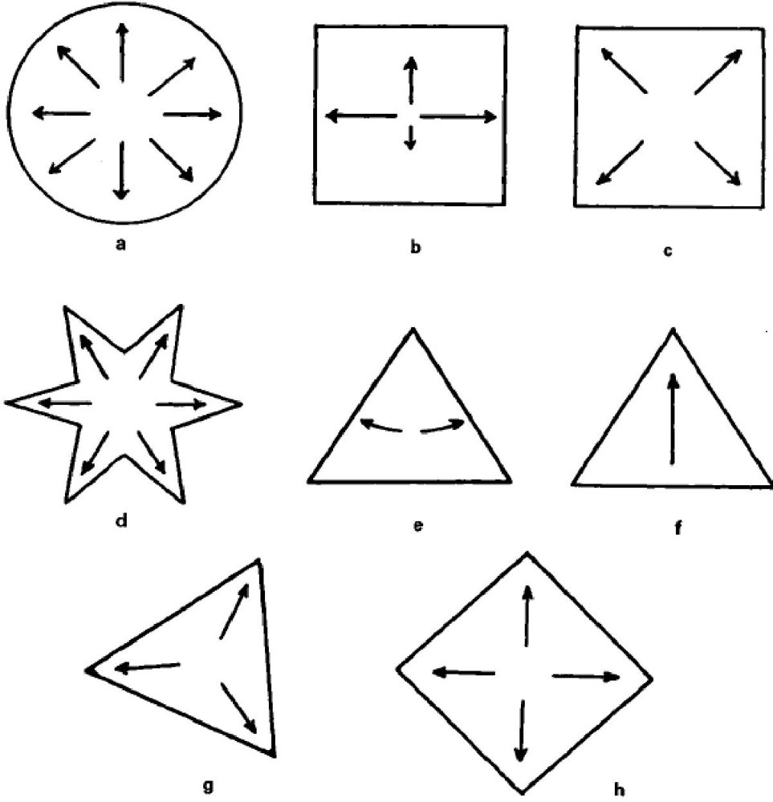
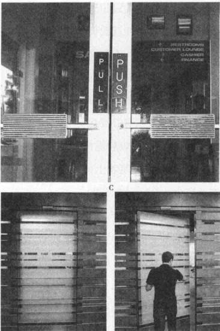
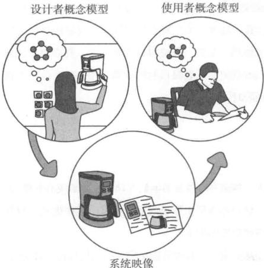
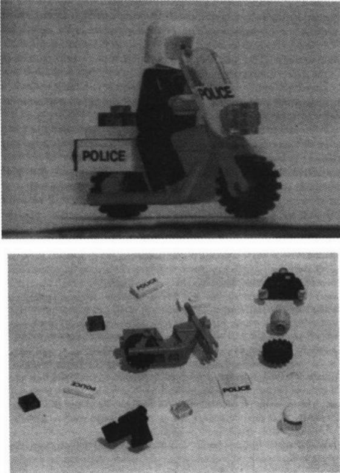
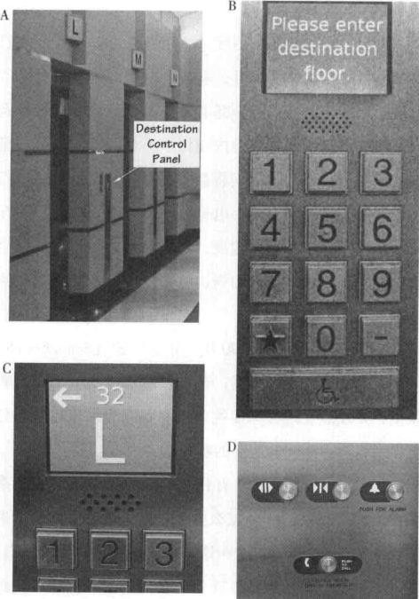
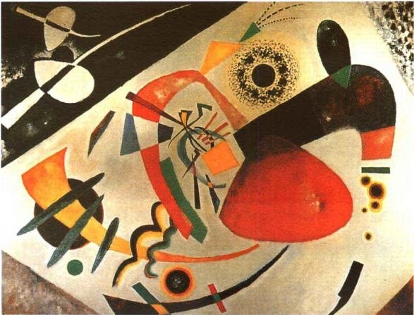
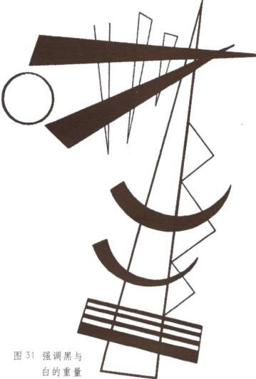
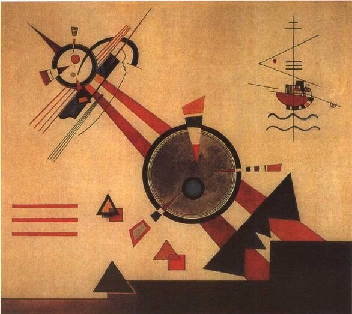
7. Source Bookshelf
Suggested reading order: Norman, 《設計心理學 1》 → 《設計師要懂心理學》 → Kenya Hara, 《設計中的設計》 → Arnheim, 《藝術與視知覺》 (chapters 1–3) → Kandinsky, 《點線面》 → Gombrich, 《藝術與錯覺》.
Show 46 titles
- [028]審醜：萬物美學 - [055]原研哉的設計世界 - [083]視覺藝術原理（第八版） - [090]設計心理學 1：日常的設計 - [091]設計心理學 2：與複雜共處 - [092]設計心理學 3：情感化設計 - [093]設計心理學 4：未來設計 - [101]日本的八個審美意識 - [125]點線面 - [136]日式設計美學 - [157]康定斯基論點線面 - [158]藝術與視知覺 - [268]藝術中的精神 - [277]圖像與眼睛：圖畫再現心理學的再研究 - [278]象徵的圖像：貢布里希圖像文集 - 設計私語錄：通心粉的孔洞之謎 - 悲劇的誕生：尼采美學文選 - 設計中的色彩心理學 - 設計之美 - 藝術與視知覺：新編 - 設計中的設計 - 設計師要懂心理學（迷你書） - 設計心理學 - 設計心理學（唐納德·A·諾曼） - 情感化設計 - 感性美學 - 我眼中的設計之美 - 日式平面美學 - 淺談設計之美 - 為什麼設計 - 重構美學 - 白 - 社會心理學（第八版） - 藝術與錯覺：圖畫再現的心理學研究 - 視覺思維 - 視覺思維（阿恩海姆） - 視覺藝術的含義 - 設計中的設計 - 設計中的設計（全本） - 設計中的設計（原研哉） - 設計師要懂心理學 - 設計心理學（247 頁本） - 設計心理學（中文版） - 設計美學（廣州美術學院藝術設計教程） - 設計與視知覺 - 象徵的圖像：貢布里希圖像學文集8. Study Cues
- On a poster, label each of the Gestalt principles it uses.
- Find an everyday object that "makes you use it wrongly". Use affordance, signifiers, mapping and feedback to analyse why, and propose an improvement.
- Choose a branded product and write its design focus at each of the three levels: visceral, behavioural and reflective.
- Use Arnheim's "structural map" to explain why placing the subject dead centre sometimes looks stiff.
- How does Kenya Hara's idea of "emptiness" relate to Muji's brand strategy?
- Use Panofsky's three levels to analyse a traditional Chinese New Year print or a contemporary advertisement.
7. Each Book
Each book in the bookshelf is described below. Every title above links to its section.
審醜：萬物美學
Original title: Ugly: The Aesthetics of Everything
Scope. This is a popular book about "ugliness". The author says plainly that he is not following the academic path of Plato, Kant or Adorno, and he also thinks that the grotesque and horrific material collected in Umberto Eco's 《論醜》 is not the same thing as the ugliness he wants to discuss. Using gardens, cars, portraits and industrial machines, the book asks why people come to like things that look imperfect or even frightening.
Main ideas
- Ugliness is not a stable label. The longer you look, the more it slides, so aesthetics cannot be called a science that can be repeatedly tested.
- Books like Eco's, which gather the grotesque, the deformed and the demonic, are very appealing, but the author thinks they still do not reach ugliness itself.
- Raphael painted Plato and Aristotle as idealised, handsome figures; the Boboli Gardens are treated as an artificial paradise on earth. The book asks readers to consider why people prefer this kind of order to a hellish scene.
- Ugliness can also give pleasure. The book's subjects include a well-designed gun, the B-52 bomber, and Quentin Matsys's 《醜陋的公爵夫人》.
- When industry enters nature, ugliness and fear overlap. To its critics, the steam train running into the Alps in 1888 was both the awe of the mountains themselves and the intrusion of oily machinery into pure nature.
Methods
- When you see an "ugly" work, first write at which level it is ugly: the surface, the function, its moral associations, or its clash with its surroundings.
- Train your eye with the book's contrast: on one side the artificial order of the Boboli Gardens, on the other industrial machinery. Write three features you actually see in each.
- Do not write "strange" straight away as "ugly". Describe first, then judge.
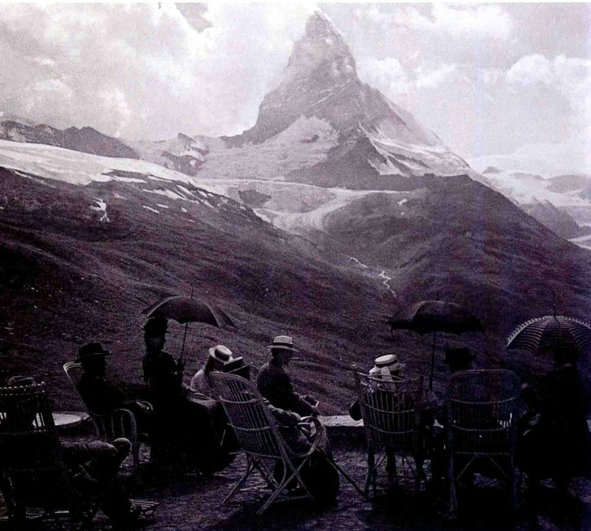
Study cues
- Why does the author think Eco's 《論醜》 has not yet touched the subject he wants to discuss?
- Choose a product you find ugly but still want to look at again, and write whether what draws you is its function, its surface, or a kind of offence.
原研哉的設計世界
Scope. This is a collection of Kenya Hara's work with commentary. The contents run from the Nagano Winter Olympics and Expo 2005 Aichi to packaging, posters and Issatsu no Hon. This section reads the book through its descriptions of his work, focusing on empty space, materials, and "familiar things that suddenly come alive".
Main ideas
- Commentators compare his posters to the traditional Japanese sense of space: empty space is not nothing, but a place where ease and tension are present at the same time. The strength comes from cutting what is unnecessary, not from overpowering the viewer.
- His organic forms, which look like seeds and also like buildings, are a little concrete and a little abstract. They break up everyday images and then dig out a deeper meaning.
- Material, colour and form are treated as equally important. The signage for Umeda Hospital uses cloth instead of industrial plastic: it can be washed, it is soft, and it brings out the cleanliness and warmth between mother and baby.
- The closer to daily life, the greater the impact. When he changes an ordinary thing slightly, it gains an unusual sense of movement.
- The brochure for the Nagano Winter Olympics embosses text and graphics, and the lower half looks translucent, like tracks left in snow. The treatment of the paper connects with the feel of ice and snow.
Methods
- When analysing one of his graphic works, first mark how much of it is empty space, then write whether that space feels loose or tense.
- Before changing a material, write one sentence of reasoning: what feel, and what possibilities for washing or replacing, does this material bring? The cloth at Umeda Hospital is an example of this question.
- When making a poster, first make a version that "relies on a second look, not on impact", then decide whether to increase the contrast.
Study cues
- Why does the signage at Umeda Hospital use cloth instead of the usual plastic panels?
- Choose one of your posters and delete half the elements. Does the remaining empty space look "unfinished" or "full of tension"?
視覺藝術原理（第八版）
Original title: Prebles' Artforms: An Introduction to the Visual Arts, 8th edition
Author: Patrick Frank
Scope. This is the Chinese translation of the eighth edition of Artforms, an introduction to the visual arts. In the preface Frank says this edition strengthens the bridge between art and everyday life: he rewrote the chapter on art criticism and added green architecture and industrial design to the architecture chapter. The contents run from "What is art?" through drawing, painting, photography, graphic design and architecture.
Main ideas
- Questions about art are put back into daily life: have you ever tried to explain something with a drawing? Has a poster in your room changed how you feel about that space?
- Part Two breaks expression into visual elements (line, shape, mass, space, time and motion, light, colour, texture) and design principles (unity and variety, balance, emphasis and subordination, directional forces, contrast, repetition and rhythm, scale and proportion).
- Looking and seeing are treated as different things. Perception, aesthetics, creativity and visual communication are a continuous set of questions in one chapter.
- Form and content must be read together. The book uses portraits to show that one subject can be observed in many ways.
- The eighth edition places industrial design within environmental design, meaning that the creativity of visual art also reaches everyday objects.
Methods
- When you describe a work, follow the book's order: elements first, then principles, and only then your judgement.
- Ask your own assignment the three questions from the start of the book: What is it explaining? Does it change how the space feels? Is the skill practised, or does it rely on inspiration alone?
- Practise critical writing on its own. First write what you see, then what it might be doing. Do not open with "good" or "bad".
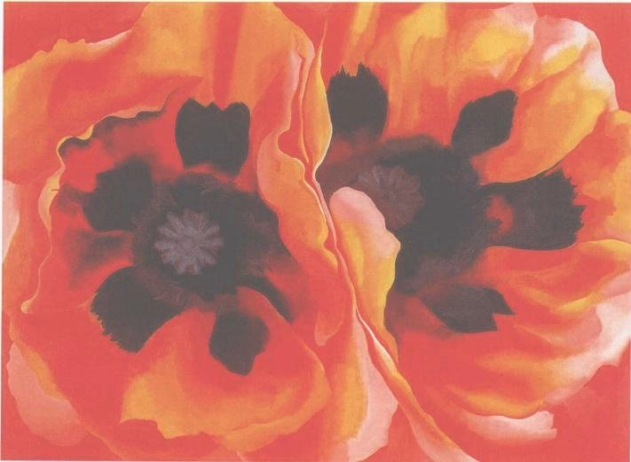
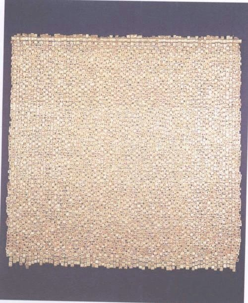
Study cues
- The book calls "line, shape, space, light, colour" elements, and "balance, emphasis, rhythm" principles. Choose a poster and give one example from each side.
- Why does the eighth edition bring industrial design into the discussion of visual art?
設計心理學 1：日常的設計
Original title: The Design of Everyday Things, revised and expanded edition
Author: Donald A. Norman
Scope. This is the revised and expanded edition of 《日常的設計》, which Norman himself rewrote as a book for the twenty-first century. His preface explains chapter by chapter what changed: cultural and natural mapping, forcing functions, the classification of errors, design thinking, and design in global business. It and the three volumes that follow each have their own subject.
Main ideas
- The basic principles of interaction are set out in Chapter 1: human-centred design, affordances and the system image. A product should let people see how it can be operated.
- Action has seven stages: execution, then perceiving the state of the world, interpreting it, and comparing it with the goal. Design must let people get all the way round this loop.
- Knowledge in the head and knowledge in the world must be kept apart. A mapping that looks natural in one culture may not stay natural in another; the book uses how different cultures view time as an example.
- Errors fall into two broad kinds of slip (action-based and memory-lapse) and three kinds of mistake (rule-based, knowledge-based and memory-lapse). Human error is presented as the result of poor design.
- The chapter on design thinking introduces the British Design Council's Double Diamond: diverge then converge to define the problem, then diverge and converge again to settle the solution. Human-centred design suits incremental innovation; most radical innovations fail, or take a long time to be accepted.
Methods
- When you redesign an everyday object, walk through the seven stages once: what the person wants to do, what they actually did, what they saw, how they interpreted it, and whether the result matched the goal.
- When checking a mapping, ask whether the correspondence would still count as "natural" in another culture.
- When you find an error, classify it first: was it a slip of the hand or a wrong idea (a mistake)? The two are fixed in different ways.
- Use the Double Diamond for an assignment: in the first diamond you may only write about the problem; only in the second diamond do you draw solutions.
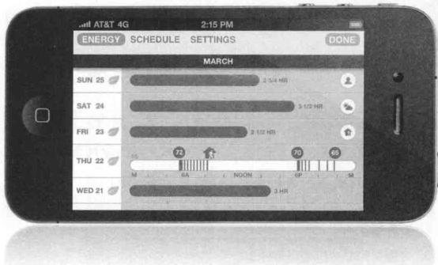
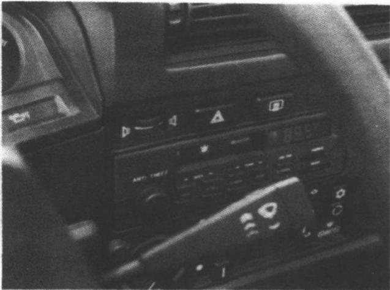
Study cues
- Use the seven stages to explain the last time you hesitated in front of a vending machine.
- Why does Norman say that human-centred design suits incremental innovation but does not easily lead straight to radical innovation?
設計心理學 2：與複雜共處
Original title: Living with Complexity
Author: Donald A. Norman
Scope. The title of this volume is Living with Complexity. In his preface to the Chinese edition, Norman writes to a China that is becoming a major power in consumer technology: complexity is a fact of life, and what is bad is "confusing complexity". Hang Jian's introduction sums it up in one sentence: designers must learn to manage complexity.
Main ideas
- Complexity can be pleasurable. Ordinary everyday skills often take months to learn, and people should not expect everything to be as simple as a hammer.
- Simplicity lives in the mind and depends on conceptual models. The same folder system can be used across different interfaces, as long as people can find their way.
- Too few buttons can make operation harder. Simple does not mean fewer functions.
- Saying that Asian websites "love complexity" more than Western ones is a misunderstanding. If you want to see many items at once, a complex layout is right; if you only want to search, a simple layout is right. The activity decides the level of complexity.
- Culture and tradition change interaction, but people and technology have more in common than not. Every culture is frustrated by "confusing technology".
Methods
- First write down the activity the thing must support, then decide whether the interface should be simple or can be dense. Do not choose a style first.
- Draw the user's conceptual model: where they think files, temperatures and routes are stored. Check it against the system's actual structure.
- If a product is hard to use, check whether the controls have been cut back too far. What you add back is structure, not just a manual.
- When introducing a complex function to someone, use a conceptual model they already know as a bridge, such as folders.
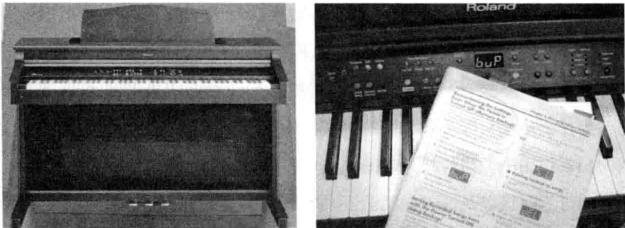
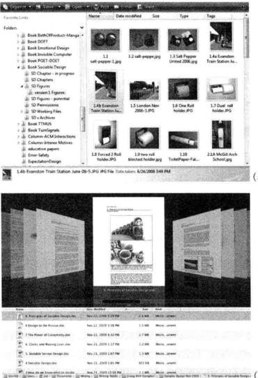
Study cues
- Use "activity" to explain why a newspaper website can be dense while a search home page should be simple.
- Find a product with very few buttons that is harder to use, and write down what kind of information is missing.
設計心理學 3：情感化設計
Original title: Emotional Design: Why We Love (or Hate) Everyday Things
Author: Donald A. Norman
Scope. This volume is Emotional Design. Norman writes that in 《日常的設計》 he put usability and logic first, and emotion, beauty and attraction did not enter the argument at the time. The book opens with three teapots and divides how things work on us into three levels: visceral, behavioural and reflective.
Main ideas
- Useful but ugly: this was designers' criticism of his early position. The three teapots show that an attractive design is not necessarily the easiest to use, but beauty and usability need not cancel each other out.
- The three levels are visceral, behavioural and reflective. The 1961 Jaguar E-Type is an example of visceral excitement; seat-adjustment buttons need a clear system image, which belongs to the behavioural level; souvenirs and self-image belong to the reflective level.
- The same thing can reach different levels in different people. Some people enjoy the visceral experience of fear; others cannot bear it at all.
- The story of colour displays: cognitively, colour is not necessarily better for work than black and white, yet Norman himself could not bring himself to go back to black and white. Here emotion made the decision before argument did.
- Sound can be designed too. Necessary alerts can be made into melodies rather than just alarms; a phone's vibration keeps the signal for the person carrying it.
Methods
- When reviewing a product, split it into three lines: first sight (visceral), in use (behavioural), and afterwards, who you would want to tell (reflective).
- If a design "looks good but cannot be used", write down which level it is stuck at. Do not just dismiss it as "the wrong style".
- Grade alert sounds: who should hear them, whether they need a melody, and whether they could become a vibration that only the person feels.
- Collect three old things you would want to keep, and write whether each one brings back a memory of function or a memory of identity.
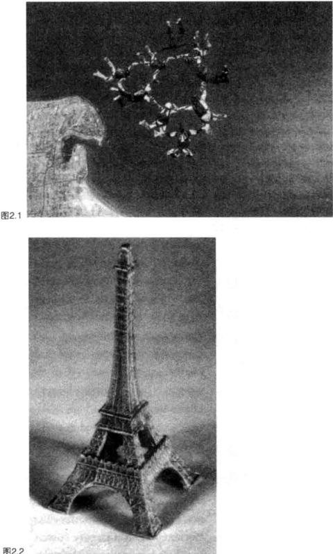
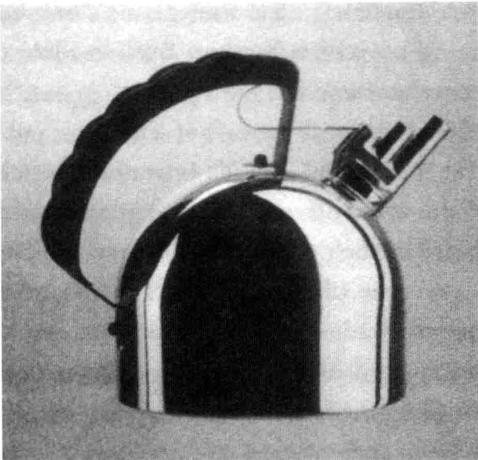
Study cues
- What is the story of the colour display meant to show? How does it differ from "usable is good enough"?
- Write one sentence each at the visceral, behavioural and reflective levels to describe the cup you use most often.
設計心理學 4：未來設計
Original title: The Design of Future Things
Author: Donald A. Norman
Scope. This volume is The Design of Future Things, about intelligent machines: navigation, anti-lock brakes, recommendation systems. The question is not whether machines can compute, but whether people and machines can work together. Norman uses Tom, who is driving, as an example: the system gives him a route but will not let him change it.
Main ideas
- Two monologues do not make a dialogue. People give commands to machines, machines give commands back to people, and there is no back-and-forth in which either can ask questions.
- Some systems can be switched off (navigation); others can hardly be left unused (stability control). Designers tend to automate as much as possible, so many tasks are only partly automated and people must be ready to take over at any moment.
- With partial automation, both sides need to know what the other is doing and intends to do. Over-trust and total distrust both lead to accidents.
- People and machines have different strengths. Machines are fast but rarely truly parallel; people are good at pattern recognition, creativity and imagination. The common ground for communication is limited.
- Natural signals are still useful. The sound of boiling water is given as an example of a signal that is natural, powerful and useful: you do not need to learn a set of symbols first.
Methods
- When designing an automatic function, write two columns: what people can intervene in, and what they cannot. The second column must explain how trust is built.
- Each time the system makes a decision, give a reason people can understand, not just the result.
- Design the moment of manual takeover as a visible state. Do not wait until the machine fails and then suddenly throw control back to the person.
- Prefer natural signals people already understand (sound, resistance, temperature) before adding a layer of icons.
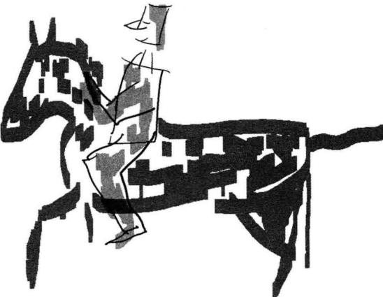
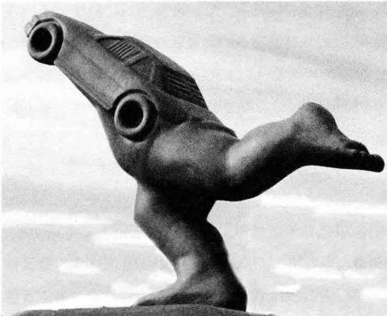
Study cues
- Why are "switching off the navigation" and "switching off the stability system" not the same kind of choice?
- Choose an app that makes decisions automatically, and write down which step does not allow you to ask why.
日本的八個審美意識
Author: Masayuki Kurokawa
Scope. Masayuki Kurokawa uses eight parallel, complementary keywords to describe the aesthetic sensibilities he believes still remain in the Japanese mind. This section reads the first part of the book: the preface refuses to be merely a slave to the Western world view, then develops "subtlety" (bi) and "parallel" (hei), and moves into "energy" (ki).
Main ideas
- The eight words are parallel and complementary, not a tree ranked from top to bottom. At the back of the book he draws this difference as serial versus parallel, and tree versus network.
- "Subtlety" does not mean seeing details as fragments of a whole. Ichigo ichie ("one time, one meeting") means that this moment, this person and this place already contain the past and the future. He reads Mies van der Rohe's "less is more" alongside "God is in the details".
- He understands time as a collection of points, not a line outside the self. This present moment holds memory and also dreams of the future.
- "Parallel" is an order among equals. In the modern city, companies and individuals compete for their own interests while still showing others a minimum of consideration; the book calls this coexistence the aesthetic of "parallel".
- "Energy" is about the field and the atmosphere, not the outline of an isolated object. A sense of order comes from paying attention to other people, things and sounds as equals, not from an absolute value outside the self.
Methods
- When looking at a Japanese object, first write "does this detail contain the whole?", then write whether it is in a main-and-subordinate or a parallel relationship with the objects next to it.
- Draw your layout once as a tree and once as a network: who is at the top, and who simply sits side by side. Do not merge the two drawings into one.
- When describing a space, add a column for "energy": air, sound, distance. Do not only measure length and width.
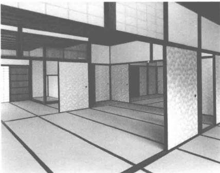
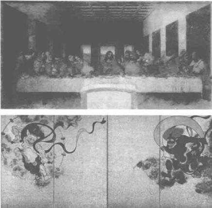
Study cues
- Use ichigo ichie to explain "subtlety". How is its starting point different from the habit of "look at the big picture first, then the details"?
- Draw the relationships between the elements of a poster. Which are tree-like hierarchies, and which simply sit side by side?
點線面
Author: Wassily Kandinsky
Scope. This is Wu Mali's Chinese translation of 《點線面》. Kandinsky writes about the basic elements of painting, limited to what can be examined in isolation: the point, and its situation on the material plane. This section follows only this book's progression: the steps of the study, the silence of the point, and inner shock.
Main ideas
- The study proceeds in three steps: look at a single element on its own, then at the relations between elements, and only at the end make a synthesis. This book mostly carries out the first two steps, and demands microscopic precision.
- The geometric point is close to zero and invisible to the eye; once it becomes a material point, it holds an inner speech. A full stop in writing is at once an interruption and a bridge between what comes before and after.
- The point is often linked with silence. Habit hides its symbolic meaning, so people cannot hear it and are only surrounded by silence.
- Shocks from outside (illness, war) can only pull people out of habit for a short while. Only an inner shock makes a person walk into the street and lets signs that were dead speak again.
- Once a point leaves practical purpose, its inner tension shows. As the point grows larger, its concentrated tension weakens. The book uses black and white points and lines to compare basic colour values and weights.
Methods
- When analysing a composition, mark only the points first: position, size, and whether each is tight or has already spread out. Do not start by talking about the subject.
- Write your notes in his three steps: isolation, relation, synthesis. If you cannot write the synthesis, stop; do not force it.
- Take a full stop out of a sentence and place it alone in the centre of the page and at the edge of the page. Look at each and see whether the tension changes.
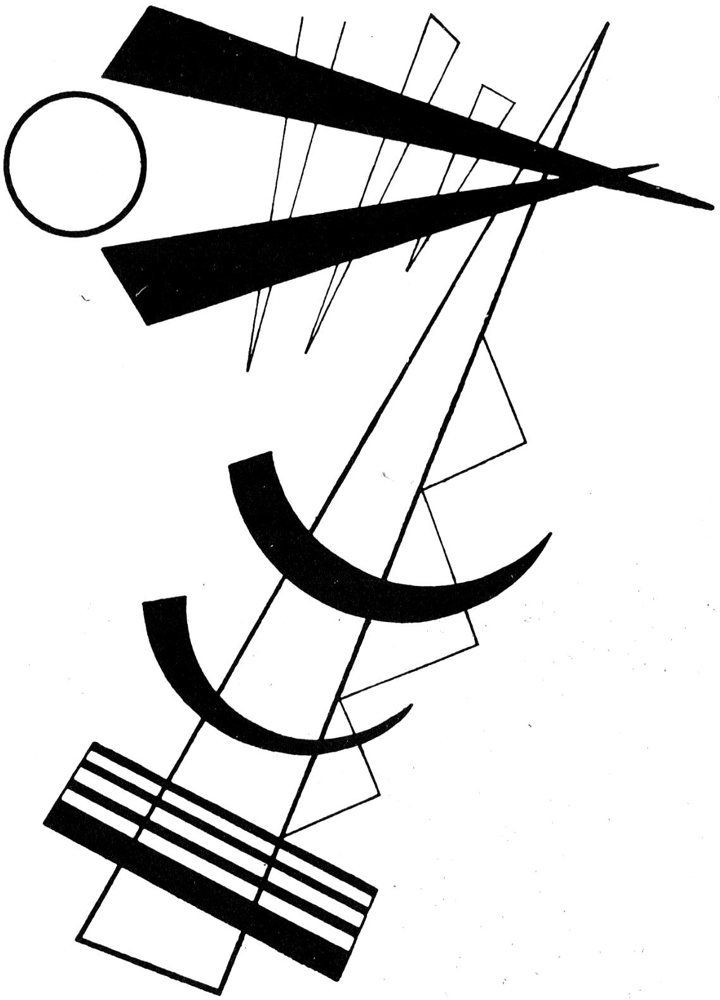
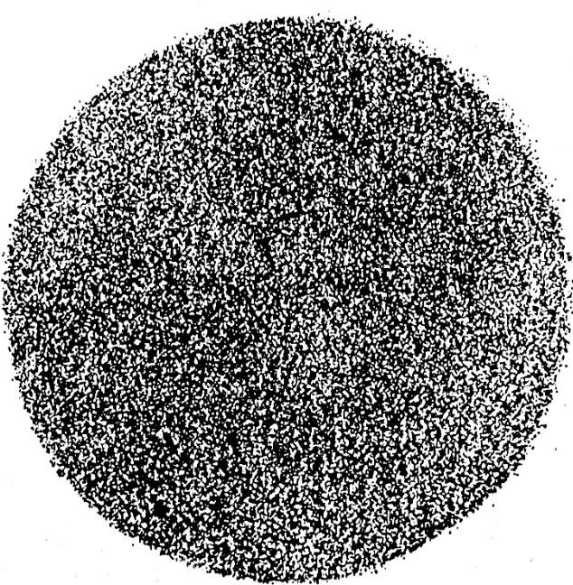
Study cues
- Why does Kandinsky say that the point in writing is both a negation (an interruption) and a bridge?
- Place a small black dot and a large black dot on a sheet of white paper. Which is more "concentrated"? Explain why in your own words.
日式設計美學
Scope. This is an illustrated catalogue focused on objects, food and spaces, with interviews with designers in between. The visible chapters include wagashi (Japanese sweets), Japanese tableware, Satsuma ware, Wakasa lacquer, Mino ware, and the tea room's "harmony, respect, purity, tranquillity" (wa, kei, sei, jaku). It deals with concrete materials and etiquette, not an abstract eight-word aesthetic.
Main ideas
- White Satsuma was once ware for feudal lords; black Satsuma was for daily use. The white Satsuma tea bowls in the book imitate eggs; pigment seeps into the crackle of the glaze, and the four bowls can be stacked.
- One black Satsuma bowl takes the citrus fruit as its theme: smooth inside like orange segments, rough outside like orange peel. One object gives two kinds of touch.
- A pair of Wakasa lacquer chopsticks has a plain surface; a spiral form lets them join into one when not in use and separate at mealtimes. The innovation is in the form, not in added decoration.
- Mino ware plates are first made by traditional craft, then cut apart and reassembled. The size is the same; the colours and patterns differ.
- In the interviews, ma in Japanese design is explained as space, distance and emptiness: to make a pattern stand out, you must leave space around it. Restaurants and buildings are asked to become continuous with nature again, not to stand like a separate machine.
Methods
- When describing a piece of tableware, write about two kinds of touch: the outside that the hand touches, and the inside that the mouth or the food touches.
- When making objects that come as "a pair", first design the state in which they are joined, then the state in which they are used apart.
- Deliberately leave an empty area next to a pattern. Check the size of the empty area with ma: does it let the main subject be seen?
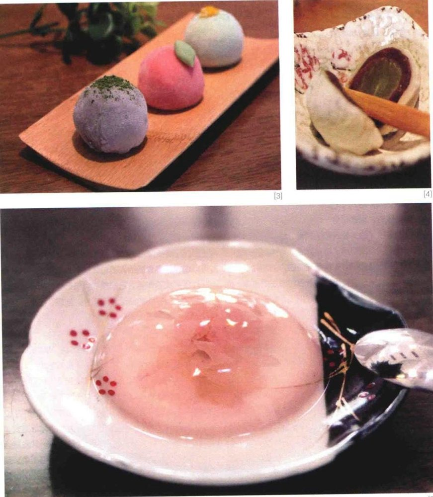
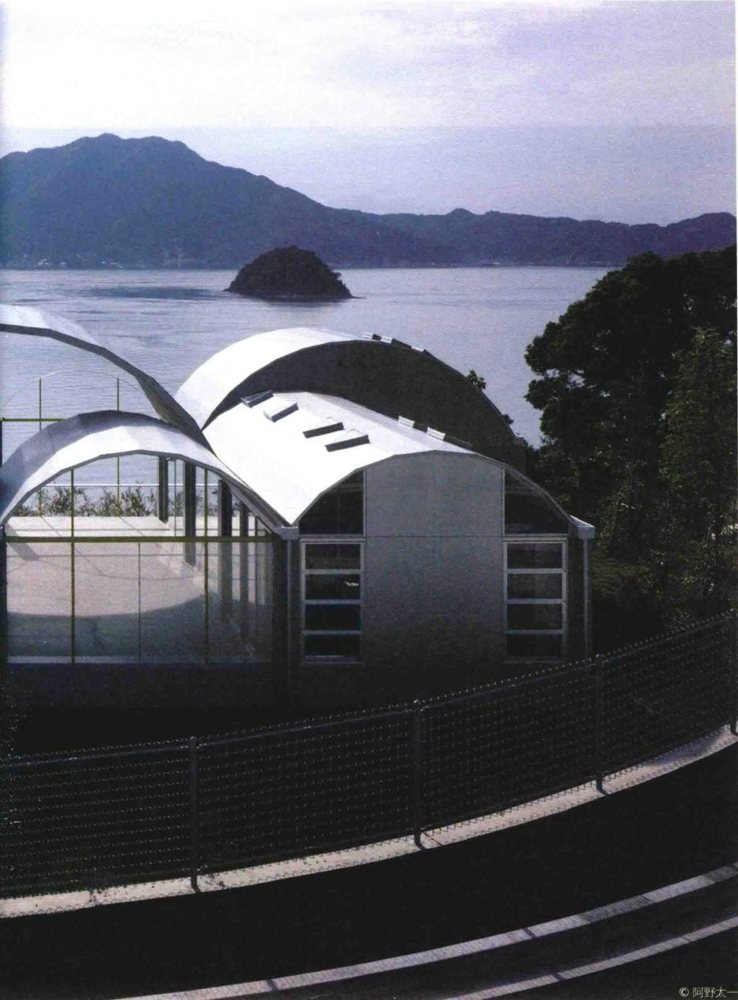
Study cues
- Whom do white Satsuma and black Satsuma each serve in the book? How does this differ from "one craft has only one kind of beauty"?
- Use ma to explain why the empty space around a pattern makes the pattern clearer.
康定斯基論點線面
Author: Wassily Kandinsky
Scope. This is another Chinese translation of 《點·線·面》, with a long preface that places it back in the Bauhaus period. The preface uses "inner sound" to explain what the book is doing: first establish the independent value of each element, then see how they combine. The main text unfolds through the point, the tension and direction of the line, and curves and angles.
Main ideas
- The outer line or shape is the element; the inner element is not the shape itself but the tension within it. The content is tension, not the outline of the outer form.
- In this book "inner sound" mainly means movement, tension and synaesthesia. The point has only tension and no direction, and its tension is concentric. Once a point leaves the centre of the picture, it sounds both its own sound and the sound of its position.
- The track left by a moving point is a line. Straight lines, angular lines and curves differ in the number and direction of forces, so inner sounds can be simple or complex.
- The analysis is described as microscopic. When the book was published in 1926, he used his own paintings (such as a picture organised with dots, and a matching black-and-white diagram) to illustrate the theory.
- The square picture plane is described as a more "objective" form. The resisting tension along its edges can turn into another kind of tension depending on the angle, which the book shows in diagrams.
Methods
- When reading this book, split each shape into two columns: outer form and inner tension. Without the second column, the analysis has not started.
- For points, first mark "in the centre or not". If it is not in the centre, also write down a "sound of position".
- Classify lines as straight, angular or curved, and for each write only one direction and one source of force.
- Make a black-and-white copy of an abstract assignment. Once the colour is removed, is the tension still there?
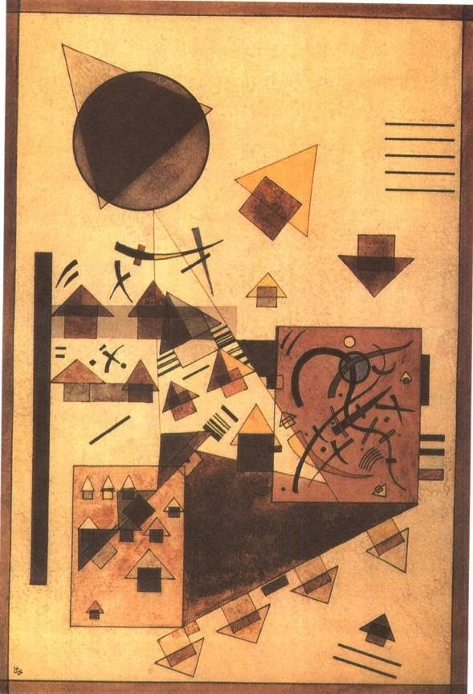
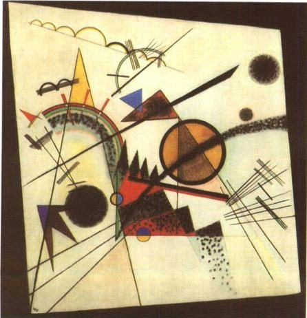
Study cues
- Why is the point said to have "no direction", while a line always has direction?
- Move a point from the exact centre of the picture to a corner. According to this book, what kind of sound has been added?
藝術與視知覺
Original title: Art and Visual Perception: A Psychology of the Creative Eye, the New Version
Author: Rudolf Arnheim
Scope. The preface to this new edition says that it is a completely rewritten book. Arnheim brings forward principles that were not obvious enough in the old version: vision tends towards the simplest structure, how schemata are subdivided, and the dynamics of perception. The contents then go on to balance, direction, top and bottom, left and right, and simplicity.
Main ideas
- Vision moves towards the simplest structure. Later visual phenomena do not cancel this tendency; instead it appears again and again in shape, colour, space and movement.
- Balance is not a copy of physical balance. The book separates psychological balance from physical balance, and asks why people need balance.
- Direction, top and bottom, right and left all take part in the pattern of balance. In the same work, top, bottom, left and right do not "equal" the same weight symmetrically.
- Vision is active exploration, used to grasp the essence of things, not passive reception. Past experience influences this process.
- Simplicity can also be manufactured. The book uses animal camouflage as an example: if a pattern looks simpler, or breaks away from the body's real outline, it can deceive other animals that also rely on sight.
Methods
- When looking at a composition, first mark four directions: top, bottom, left, right. Write which side is heavier; do not just say "balanced".
- Shrink the work right down and check whether it collapses into a simpler shape. If it collapses too quickly, some details may be unnecessary.
- Write separately "what I know it is" and "what structure I see". When the two sentences do not match, past experience is at work.
- When revising, ask: can I use fewer structural features and still let people see that this is the same thing?
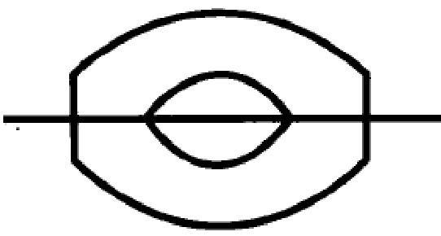
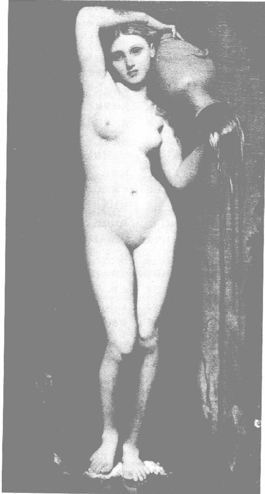
Study cues
- Explain "vision tends towards the simplest structure" in your own words. Then give an example other than camouflage.
- In the same poster, do the top half and the bottom half carry the same visual weight? What do you base your judgement on?
藝術中的精神
Author: Wassily Kandinsky
Scope. This is a scan of 《藝術中的精神》. The table of contents is short, and the two topics of the main text are colour and form. The long essay at the start of this volume uses the state of contemporary art to argue, from the other side, for what Kandinsky insisted on: a work must contain spirit, not just material.
Main ideas
- Kandinsky believed that colour can convey emotion, and that the life of the soul can appear through a material medium. An artist's seemingly casual strokes should have an inner basis.
- The book treats colour and form as the components of the artwork. Without them, the inner content cannot be seen; with only them, it is still not enough: it is the pure elements that make the work stand.
- This scan contrasts Malevich with Warhol: one compares the work to a spiritual experience in the desert, the other turns goods and stars into glittering golden icons. Gold can be sacred, and it can also be filth.
- The essay criticises "what you see is what you get": if what you see is everything, art needs no inner drive. Clement Greenberg is placed on this line, which reduces art to paint and medium.
- So what this volume offers is not a recipe for composition but a judgement: are form and colour carrying a subject, or is only an empty shell left?
Methods
- When looking at an abstract work, first write separately: what the colour does, what the form does, and what the two point to together.
- Check your own poster with this book's question: once the title is removed, do the colours and shapes still carry an inner meaning?
- When you meet gold, gloss and logos that "look expensive", write whether they raise a sense of the spiritual or a sense of the object's price.
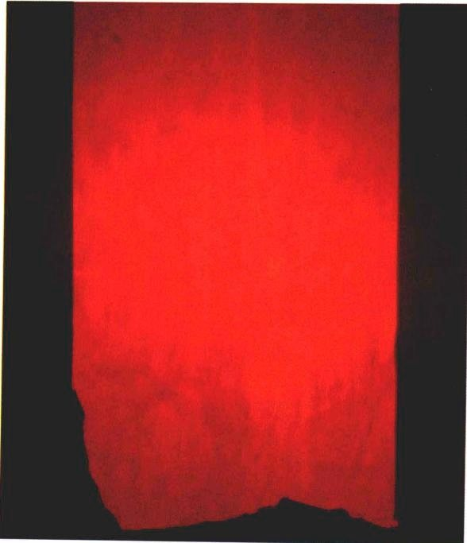
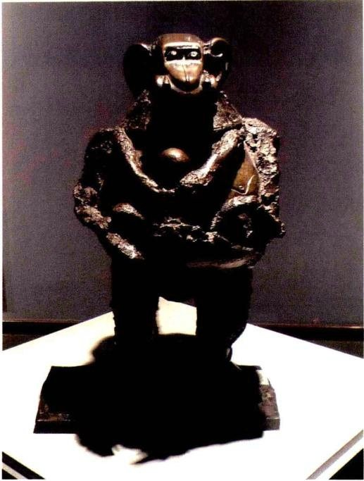
Study cues
- What does Kandinsky want colour and form to carry? Where does this conflict with "what you see is what you get"?
- Choose a poster made only of colours and geometric shapes, and write what you think its "inner" content is. If you cannot, explain why.
圖像與眼睛：圖畫再現心理學的再研究
Original title: The Image and the Eye: Further Studies in the Psychology of Pictorial Representation
Author: E. H. Gombrich
Scope. 《圖像與眼睛》 is a collection of Gombrich's essays, not a condensed 《藝術與錯覺》. He says himself that the title is meant to mark how the focus of perception research has shifted to the perception of images. The essays in the contents deal in turn with movement and the moment, ritualised gesture, mask and face, picture writing, and image and code.
Main ideas
- These essays often restate arguments from 《藝術與錯覺》, but the main theme has changed: how images are used by the eye, not only how styles change.
- "Visual discovery through art" describes looking at pictures as a kind of discovery, not a photocopy of a ready-made world.
- Action and expression are discussed separately: action on the stage and in art, symbolic and expressive gestures, narration and interpretation, the style of picture writing.
- Size constancy can be startling. The outline of a building on a windowpane is smaller than your palm, and the height of the window is no more than a finger, yet normally we do not see the building like this.
- The chapter on mask and face asks how we perceive "looking alike". Representation does not measure every millimetre; it judges likeness within a physiognomy.
Methods
- When reading a picture, circle "this moment": which posture of the body has been frozen, and is it symbolic or expressive?
- Measure sizes on a photograph with your finger, then write how big you normally think the thing is. The difference is constancy at work.
- When analysing an icon, ask: does it rely on a code (something agreed by convention), or on a shape that can be recognised at a glance?
- For the same face, write "who it looks like" and "the size of the features". Do not merge the two into one sentence.
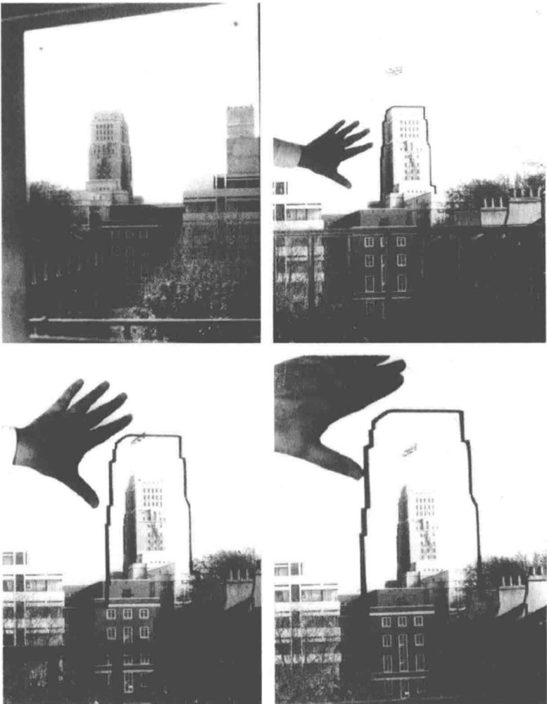
Study cues
- The main theme of this book is the perception of images. What does it cover, and what does the question "how do styles evolve" cover?
- Why is the building on the windowpane surprising? What does it show about the correction the eye normally makes?
象徵的圖像：貢布里希圖像文集
Original title: Symbolic Images: Studies in the Art of the Renaissance
Author: E. H. Gombrich
Scope. This collection discusses iconology: how symbols are understood, and the ways they are misread. The opening essay is titled "The elusiveness of meaning". The editor's introduction explains that Gombrich did not accept Erwin Panofsky's three levels of meaning as a ladder that can be safely applied.
Main ideas
- Panofsky's three levels (the natural subject matter of pre-iconography, the stories and allegories of iconography, the intrinsic meaning of iconology) have been very influential, but the introduction lists doubts about them: the premise of the levels, the neglect of the aesthetic meaning of form itself, and the way symbolic interpretation easily drifts away from convention.
- Gombrich points out that the three-level model is related to medieval scriptural exegesis: a passage of scripture could have literal, typological, moral and prophetic meanings. He argues that no original source yet proves that the Middle Ages or the Renaissance applied this theory to pictures.
- Hegelian interpretation has two dangers: presenting a style as a herald of the spirit of the age, or, the other way round, reading a reproach as praise of the flesh. Both make the meaning larger than the picture can carry.
- The case studies in the book include Tobias and the Angel, Botticelli's mythologies and the philosophy of symbolism. The method is to go back to original texts and conventions, not to write a general theory of an era first.
- "Decorum" and "the dictionary fallacy" are two warnings: symbols have occasions of use, and you cannot assume every object has only one fixed meaning, as if in a dictionary.
Methods
- Before interpreting a symbol, first look for textual conventions from the same period. If you cannot find any, write "this is a hypothesis".
- Split your interpretation into what you actually see and what you add from the literature. Use different sentences for the two parts.
- Check whether you have described a single work as the spirit of an entire age. If so, shrink the sentence back to this one work.
- For the same object (a dog, a mirror, a pair of scales), find at least two historical uses, to avoid a dictionary-style single meaning.
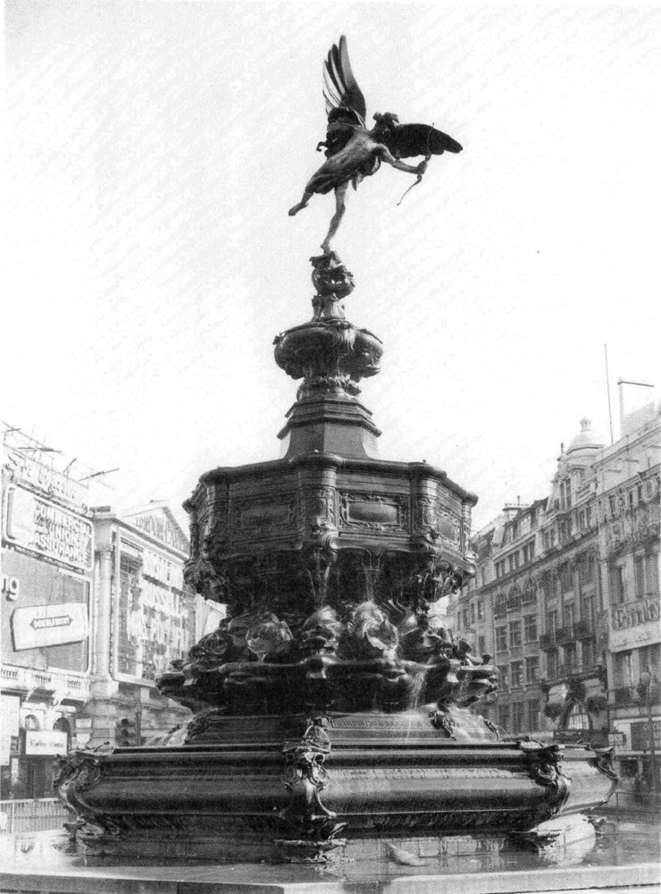
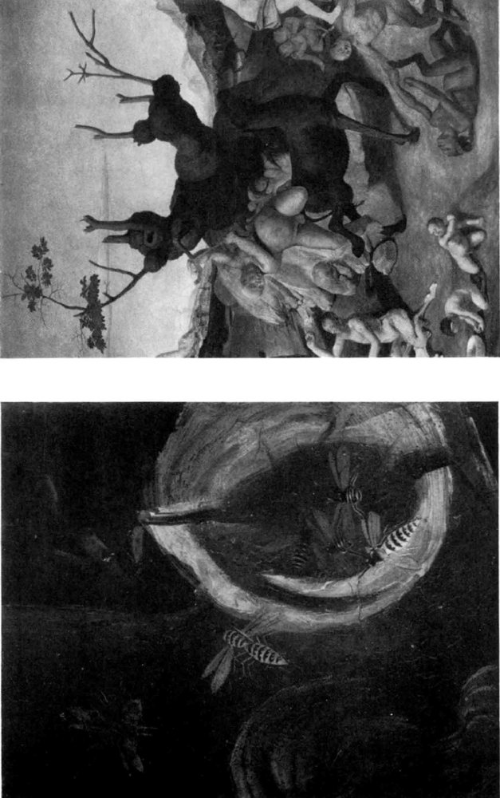
Study cues
- Why is Gombrich wary of "moving the levels of scriptural exegesis straight onto pictures"?
- Choose a common symbol (a heart, a skull, a pair of scales) and write two uses of it that cannot be swapped.
設計私語錄：通心粉的孔洞之謎
Author: Kenya Hara
Scope. 《設計私語錄》 (2011) is a set of short essays, not a systematic theory. The contents run from the hole in macaroni, binding like a pair of cupped hands and paper letters, to the character of white and cloth that touches the heart. Each essay picks an everyday object and asks why its form has survived.
Main ideas
- In theory, pasta dough can be made into any shape. The shapes that remain on the table have been selected again and again by the way they are eaten. Japanese udon and soba, in turn, give their cross-sections shapes that suit chopsticks and slurping.
- The book is seen as a container. Cupped hands scooping water are one origin of the container; a book is the small space where paper is stacked to keep knowledge. Binding should therefore be quiet and simple, like the space inside cupped palms.
- Paper letters are slower than email, but the name, address and signature on the writing paper carry feelings that email cannot deliver. Specialist shops in Europe and America still make such stationery today.
- "The character of white" and "cloth that touches the heart" treat colour and material as personality, not as paint for filling a picture.
- The method of the essays is to start from a small object (adhesive tape, a salad dressing nozzle, sawtooth salmon), not from a big slogan.
Methods
- Choose something you eat or use, and write which action its form is tied to (slurping, picking up with chopsticks, gripping, scooping).
- When designing a book cover, first cup your hands together to measure out a space, then decide whether the cover should be loud.
- Compare a paper letter with an email: what kind of extra information does the letter carry (signature, paper, letterhead), rather than which one is faster.
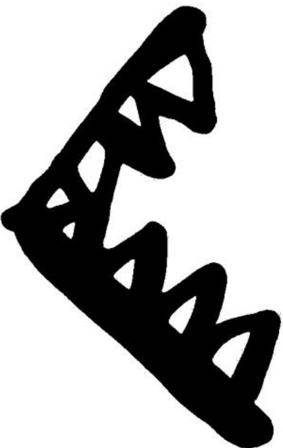
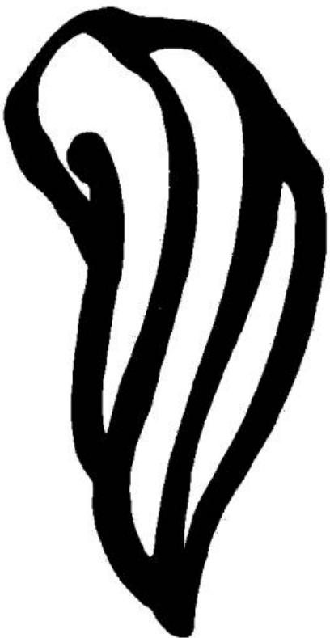
Study cues
- Why can the macaroni shapes that survive on the market be seen as the result of design?
- Describe a book using "the space inside cupped palms". When the cover is too loud, what happens to its sense of being a container?
悲劇的誕生：尼采美學文選
Author: Friedrich Nietzsche
Scope. The core of this selection, translated by Zhou Guoping, is 《悲劇的誕生》. The long introduction explains that it is not a work of classical philology but a philosophical book that uses Greek tragedy to discuss artistic impulses. When it was published, most of the academic world rejected it.
Main ideas
- The Apollonian and the Dionysian are presented as two artistic impulses. The Apollonian is linked with dreams, appearance and form; the Dionysian with intoxication, music and collective excitement.
- The two impulses differ in nature, yet they enter into a relationship. Greek tragedy is explained as Dionysian music giving birth to images, which then form an alliance with Apollonian form.
- The pleasure that tragedy brings is called metaphysical comfort, not simple happiness.
- The Dionysian phenomena that Nietzsche valued have few written records and have never been at the centre of orthodox classical studies. He understood them through his own inner experience, so the book reads like a kind of initiated seeing rather than textual scholarship.
- The translator's preface stresses that if you judge it only by academic standards, you will miss the experience it sets out to awaken.
Methods
- When looking at a design, note separately "the appearance of its form" (Apollonian) and "the excitement it wants to stir up" (Dionysian). Both columns need sentences.
- Read the table of concepts in the translator's preface first, then enter the main text. Do not treat it as a textbook of Greek history.
- When discussing tragedy or intense visuals, write whether the audience receives fear, comfort, or the two in turn.
Study cues
- As the book uses them, what kind of artistic experience does each of the Apollonian and the Dionysian connect to?
- Why does the translator say that this book cannot be judged only by the standards of classical philology?
設計中的色彩心理學
Author: Kim Yong-suk
Scope. Kim Yong-suk's book starts from light and wavelength, then moves on to hue, value and chroma, and to colour in symbolism and in everyday colour schemes. It is a popular book on colour psychology: it covers both Newton's spectrum and the Korean five cardinal colours (obangsaek), and the second half links colours with descriptions of personality.
Main ideas
- Colour is a perception caused by light. Visible light runs from violet at about 380 nanometres to red at about 780 nanometres; beyond it are ultraviolet and infrared. In 1666 Newton used a prism to split white light into seven colours.
- The light source rewrites an object's own colour. Incandescent light contains more long-wavelength red and looks warm; fluorescent light contains more short-wavelength blue, so colours look pale. In a tunnel there is little reflected light, so lips look grey.
- The Korean five cardinal colours match blue-green, red, white, black and yellow to east, south, west, north and centre; colour is also a cosmology. The West has a different tradition of astrological colour associations.
- On the colour wheel, nearby colours are analogous, distant ones are contrasting, and directly opposite ones are complementary. The human eye is most sensitive to value, then to hue and chroma.
- The later part of the book discusses colour schemes by psychological effect, and lists personality descriptions for "people who like a certain colour". These descriptions are the book's own typologies, not experiments that this section can carry out for it.
Methods
- Before specifying a colour, first write down the light source: daylight, incandescent or fluorescent. Record the same colour swatch once under each of the three lights.
- When building a colour scheme, mark the distance on the colour wheel: analogous, contrasting or complementary. Each distance serves only one purpose.
- Value contrast comes before hue contrast. When text is hard to read, first widen the difference between light and dark, then change the hue.
- When you read sentences like "people who love orange are sociable", note them as the book's personality sketches, and separately look for evidence you can observe in design (warm and cool, advancing and receding).
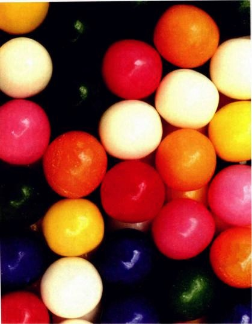
Study cues
- The same piece of clothing looks a different colour in the shop and at home. Explain this with the light source.
- What design purposes do analogous and complementary colours on the colour wheel each suit? Give one example of each that you have seen.
設計之美
Original title: Beautiful Thing: An Introduction to Design
Author: Robert Clay
Scope. Robert Clay uses "beauty" as a way into design, rather than adding a line about beauty after function. The book's contents set several creeds side by side: form expresses function, fitness for purpose, form enhances expression, form follows emotion; and it distinguishes high taste from popular taste.
Main ideas
- Simplicity is a goal, but simplicity alone does not guarantee beauty. He more often uses "elegance": resolving conflicting constraints with less material. Here Mies van der Rohe's "less is more" means growing from little to much, not crude cutting.
- Beauty is discussed in terms of evolution and culture. The book cites the view that our liking for flowers, ripe fruit and healthy bodies is linked to survival and reproduction; the bowerbird courting with its nest and colours is treated as another kind of "display".
- Environments can lift or lower people's spirits. Architecture is presented as bound up with the mental health of a place, not just a choice of style.
- The creeds are plural. Form can express function (product semantics) and it can also follow emotion. Michael Graves's products are placed under emotion.
- The same technical specification can produce an ugly car or a beautiful one. When function meets art, logic alone cannot explain the difference.
Methods
- When reviewing a product, first state which creed you are using: expressing function, fitness for purpose, or following emotion. Do not treat all three as a single score.
- After cutting something back, check whether it is "elegant": the constraints are still met, there is less material, and the thing still works.
- Make two outer forms for the same function. Write down where the technology is the same, and the one stroke where beauty and ugliness part ways.
Study cues
- How does Clay distinguish "simple" from "elegant"? Explain with a piece of furniture.
- Can "form expresses function" and "form follows emotion" both appear in the chairs of one classroom? Write one sentence for each.
藝術與視知覺：新編
Original title: Art and Visual Perception: A Psychology of the Creative Eye, the New Version
Author: Rudolf Arnheim
Scope. The title of this volume states directly that it is the new version. The preface again explains that the whole book was rewritten, and that the simplest structure, the development of schemata and the dynamics of perception are set out as principles running through the whole book. Closer to the contents are the hidden structure of a square, two discs, weight, and what shape is.
Main ideas
- A square holds a hidden structure. Once a shape is placed inside it, what people see is not only its outline but also its relationship with this structure.
- Two discs placed in the same square push and pull on each other. Perceptual forces are this relationship, not the physical mass of the discs themselves.
- Weight, direction, top and bottom, left and right together make up the pattern of balance. Balance is also tied to human psychology; Cézanne's painting of Madame Cézanne in a yellow chair is used to discuss this.
- Shape is not a list of outlines. Vision grasps the essence of things; past experience takes part in this grasping, but the book insists on stating the principles clearly rather than just piling up examples.
- Children's drawings and the "transparent" kangaroo show that drawing what is inside the belly does not necessarily mean the body is understood as transparent. Hunters and children draw the whole they want to grasp.
Methods
- On a square, draw the hidden lines you assume are there (central axes, diagonals), then place a disc inside and write down the pull once it moves off them.
- When two elements are present at once, write separately "the shape of each" and "the force between them".
- When looking at a child's drawing or an icon, ask whether it shows the visible surface, or the whole it wants people to know about.
- When projections and recesses appear in pairs on a building or a poster, mark each pair and see whether the tension is still there.
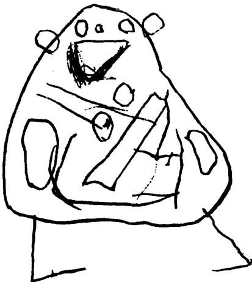
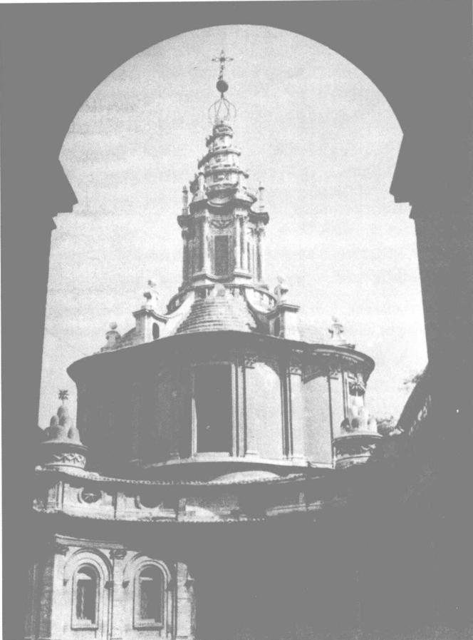
Study cues
- Place two discs of the same size in a square, one in the centre and one near a corner. Which is more uneasy? Why?
- A child draws the food that was eaten inside a person's belly. According to this book, this is not necessarily "transparency". So what is it?
設計中的設計
Author: Kenya Hara
Scope. This is a scanned copy of 《設計中的設計》. Chapter 1 looks back at where the concept of design came from; Chapter 2 moves into RE-DESIGN: designing the everyday objects of the twenty-first century again. The contents of this volume go down to Shigeru Ban's toilet paper, Masahiko Sato's immigration stamps and Kengo Kuma's cockroach trap.
Main ideas
- The origin of design is traced back to John Ruskin and William Morris. At the 1851 Great Exhibition in London, machines imitated the refinement of handcraft, and the result was abundant and crude. Their objection was an aesthetic backlash against industry, and also the starting point of the concept of modern design.
- The tide did not stop there. Once mass production became a reality, those who came later had to ask how to look again at the space between making and living, not just go back to handcraft.
- The second half of the twentieth century is seen in several stages: standardised production, restyling, creating brands through concepts, postmodern play, computer technology, and then going beyond modernism.
- Re-design is not inventing a new category of product; it is making everyday life unfamiliar. In this chapter art and design are compared side by side.
- Each example in the book has an everyday object: a square toilet roll, immigration stamps, a cockroach trap. Later illustrations also describe a forest with only a few guest rooms, and ask what is left of an exhibition at a World Expo once "if you want to see something, you go online".
Methods
- When redesigning something, first write down the everyday action it involves now (pulling paper, stamping, catching insects), then change only one of its premises.
- When reading this part of design history, split "opposing crude machine-made goods" and "accepting mass production" into two columns; do not merge them into a single nostalgia.
- If the information in an exhibition or presentation can already be found online, write what kind of bodily experience this live event adds.
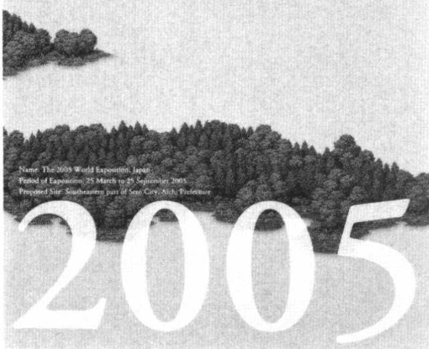
Study cues
- Were Ruskin and Morris really against machines, or against the quality that machines produced at the time?
- Choose an everyday object, change just one premise of its use, and write it as a one-sentence redesign.
設計師要懂心理學（迷你書）
Original title: 100 Things Every Designer Needs to Know About People
Author: Susan Weinschenk
Scope. This is the mini edition of 《設計師要懂心理學》. The clearest part of the scan is the later section of the contents: how people focus their attention, what motivates people, how people see, how people decide. The earlier entries (memory, thinking, mental models) are also in the contents, but the sample pages in this volume fall in the chapters on error messages and decisions.
Main ideas
- Attention is selective. People actively filter, and only notice salient cues; expectations about frequency change attention. The book says attention lasts only about ten minutes, and people cannot do several tasks well at the same time.
- Six kinds of thing are especially good at hooking people: danger, food, sex, movement, faces and stories. A loud noise startles people and grabs attention, but people must perceive something before they can attend to it.
- The chapter on motivation: people are more driven the closer they get to a goal; variable rewards work; progress, mastery and a sense of control last longer than material rewards alone. Habits take a long time to form.
- The contents of the chapter on decisions state that most decisions are made unconsciously; people equate choice with control; emotions affect decisions; a real thing in front of you is worth more than a distant promise.
- Error messages should use simple, plain words. The sample pages in this volume place "how to write a clear error sentence" before the chapter on decisions.
Methods
- Put only one salient cue on a screen. Faces, movement and stories should not compete with the main message.
- Cut long pages into blocks that can be read in about ten minutes, each with its own small goal.
- Design progress as visible closeness: one step to go, not a bar with no end.
- In error sentences, write only what to do next; do not write the system's internal jargon.
Study cues
- Which six kinds of thing does the book say are especially good at grabbing attention? Which of them does your current assignment use?
- Why can "the closer to the goal, the stronger the motivation" be turned into progress design in an interface?
設計心理學
Original title: The Design of Everyday Things
Author: Donald A. Norman
Scope. This is an earlier Chinese translation of 《設計心理學》, which begins with the "Norman door" and frustrating everyday objects. The terms it uses are affordances, visibility, mapping, feedback and constraints. Compared with the volume from the revised edition, the sample in this one stops at these principles and at "learning to observe".
Main ideas
- When people use something wrongly, they often blame themselves. The book sets out to reverse this habit: first check whether the design has made the correct operation visible.
- Affordances (also called perceived affordances in the book) are how an object looks as though it can be used. The correct use should be obvious, and wrong uses should be hidden.
- The principles of ease of use include a good conceptual model, visibility, mapping and feedback. Without feedback, people press buttons again, or switch things off when they should not.
- Constraints are the most reliable way to prevent errors: a battery or a memory card can go in only one way, or works whichever way it goes in. If something needs a "push here" label, the design has already failed.
- Technology gets faster; people do not. New functions keep being added to phones, websites and car dashboards, and the result is more like a cockpit, not easier to use.
Methods
- Each time you use something wrongly, write three lines: what I thought it could do, what it actually wanted me to do, and what I could not see.
- Use "does it need a label?" as a test. If it needs one, go back and change the shape or position.
- Give every control a mapping: its position or direction must match the result.
- Watch other people use doors, switches and taps. Do not speak up to help; first record the moment they pause.
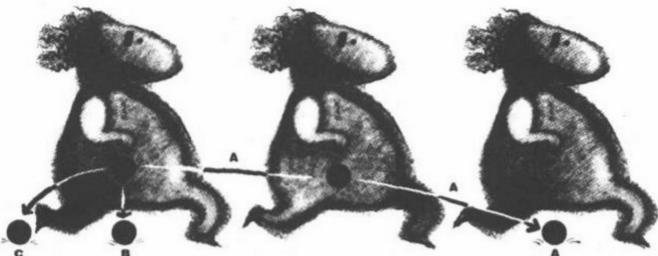
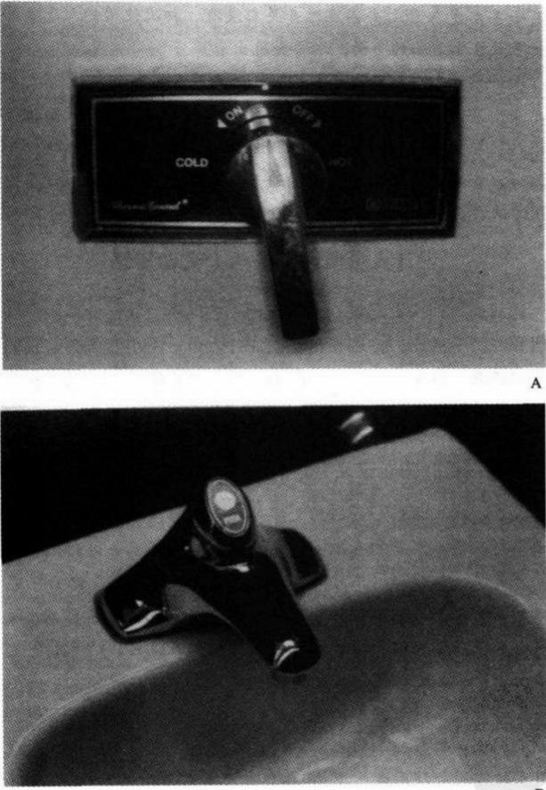
Study cues
- According to this book, what does a "push here" sign on a product tell you?
- Choose a door in your home, and write whether its affordance matches the action it actually requires.
設計心理學（唐納德·A·諾曼）
Original title: The Design of Everyday Things
Author: Donald A. Norman
Scope. This is another Chinese scan of the same 《設計心理學》. Its contents likewise run from the troubles of everyday objects, affordances and conceptual models to visibility, mapping and feedback. The sample pages in this volume fall on how conceptual models determine operation, and on how a reminder must have both a signal and a message.
Main ideas
- A home thermostat and a car's air conditioning can both be simply "fully on or off", but their conceptual models differ. In a room, setting it too high only wastes energy; in a car, the ideal temperature comes from mixing hot and cold air, so you first turn it to an extreme and then turn it back to hold it.
- Good design is the designer and the user communicating through the product itself. There should be a natural mapping between the position of the controls and what they do, so people can see at a glance what each control is for.
- Without a conceptual model, users make one up for themselves, and then make mistakes.
- Feedback tells people whether the operation they just made has taken effect. Otherwise they repeat the command, or restart at the wrong time.
- An ideal reminder has two layers: a signal (telling you to look) and a message (once you look, you know what to do). A knot tied in a handkerchief has a signal but no message.
Methods
- For two controls that look the same, first write the conceptual model of each, then decide whether the interface can look the same.
- Every switch must be able to answer: which result does it control, and where does the result appear?
- When designing a reminder, design both the signal and the message. A red dot with no sentence is not finished.
- Prevent wrong insertion: if it can be made to go in only one way, make it so; do not rely on small icons.
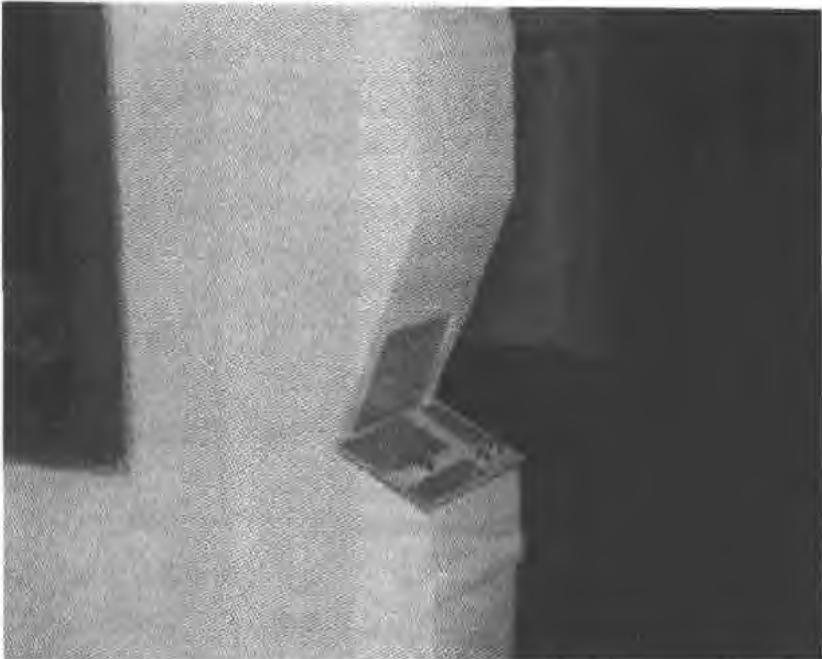
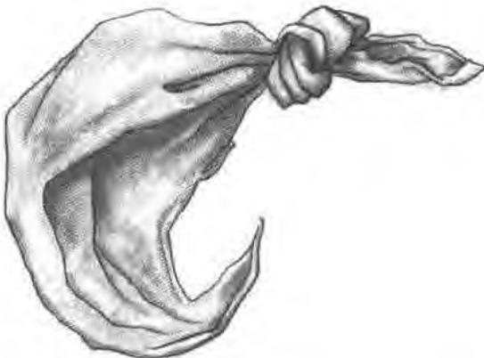
Study cues
- Why can a room thermostat and a car's air conditioning not use the same operating habits?
- Design a reminder for yourself to hand in an assignment. What is the signal, and what is the message?
情感化設計
Original title: Emotional Design: Why We Love (or Hate) Everyday Things
Author: Donald A. Norman
Scope. This copy of 《情感化設計》 takes "Attractive things work better" as the title of its first chapter, and divides processing into three levels: visceral, behavioural and reflective. It discusses the same set of levels as the 《設計心理學 3》 volume above, but the sample in this copy focuses on how the three levels regulate each other, and how negative and positive emotions change thinking.
Main ideas
- The visceral level relies on fixed, fast responses; the behavioural level handles skilled operations already learned; the reflective level can look back, generalise and talk to others. A person can drive at the behavioural level while thinking about something else at the reflective level.
- Three activities are used to separate the three levels: riding a roller coaster (visceral fear), chopping vegetables with a good knife (behavioural skill), and reading a work that needs interpreting (reflective).
- People queue for roller coasters because visceral fear fights with reflective pride. Not every level wins.
- Bottom-up processing is driven by perception; top-down processing is driven by thought. Emotion judges value; cognition judges meaning. Negative emotions make people tense up; positive emotions change the way they solve problems.
- The order of response that visceral design aims for is often: liking first, and only then asking what it does and what it costs. The book also uses a cute tea accessory to show that pleasure can be recognised before function.
Methods
- When mapping the three levels, write down where they fight, for example fear and the pride afterwards. Do not assume the three levels always agree.
- When testing, first record whether the first thing said is "it looks nice" or "what is this for?". The order itself is data.
- Do not interrupt skilled operation with long reflective-level explanations. Keep explanations for the first time, and leave the feel of use for afterwards.
- Check whether negative emotions (anxiety, blame) lock users into a narrower solution.
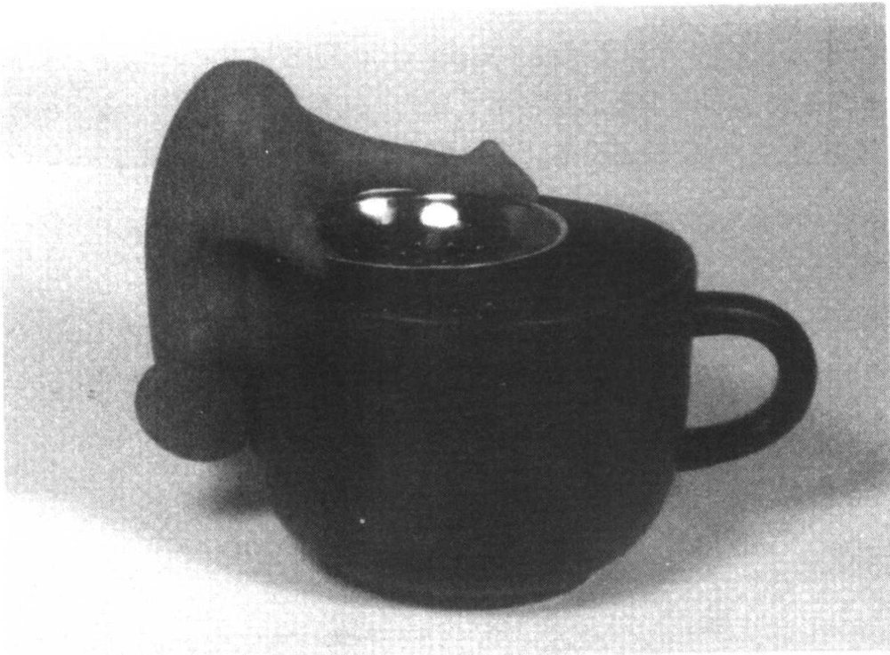
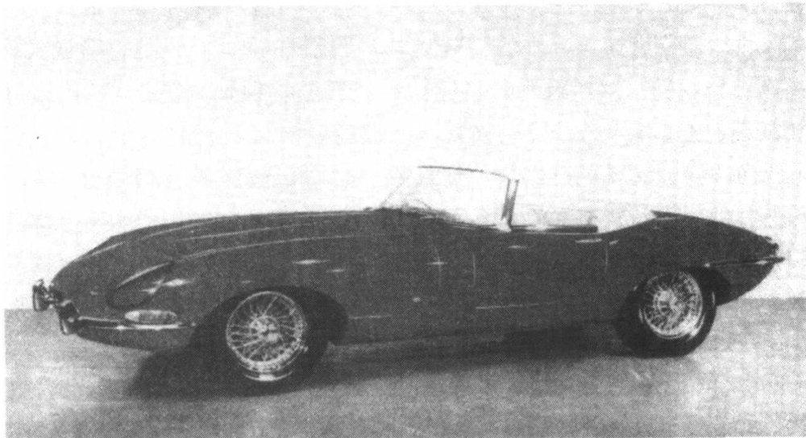
Study cues
- How does a roller coaster use both the visceral level and the reflective level at once?
- Why can a pianist play while talking? What does this suggest for interface design?
感性美學
Scope. This is one book in the Young Doctors of Aesthetics Library series, and its subtitle points to a view of aesthetics that starts from human nature. The contents begin with aesthetic feeling: the aesthetic is not reflection, aesthetic feeling and the judgement of taste, aesthetic feeling and pleasure, and then how aesthetic ability develops in groups and in individuals. The long text in the sample is mainly the series' publisher's note, so this section reads the book through its own chapter titles.
Main ideas
- The book's plan is to start from aesthetic feeling, rather than first defining "beauty" and reasoning down from there.
- "The aesthetic is not reflection" separates the aesthetic from the theory of reflection in epistemology. A later chapter is devoted to how this claim relates to Marxism.
- Aesthetic feeling, the judgement of taste and pleasure are given separate chapters. Feeling pleasure is not the same as having made an aesthetic judgement.
- The middle part presents the aesthetic as an ability unique to humans, and writes separately about how groups develop this ability, how individuals develop it, and how its function is realised.
- The last part turns to art, nature and the aesthetic, and discusses "natural beauty": appreciating nature and appreciating natural beauty are not the same process.
Methods
- When writing about a feeling, use three sentences: pleasure, judgement, and where you think its beauty lies. Do not use the same adjective in all three.
- When looking at a landscape, write two processes: are you appreciating nature, or appreciating a way of seeing that has already been called "natural beauty"?
- To read this book, first make your own list of questions from the chapter titles, then go into the academic history in the series preface. This avoids treating the preface as the main text.
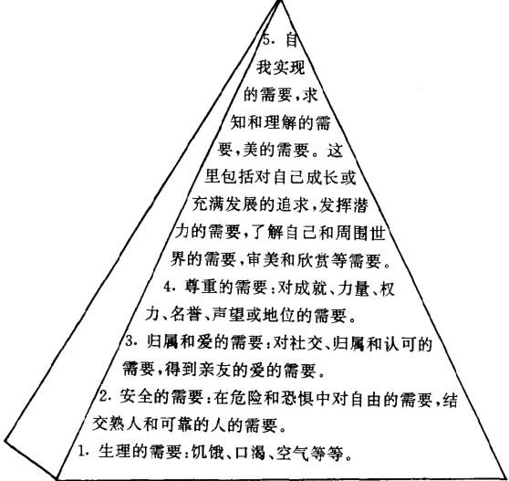
Study cues
- According to the book's contents, why are "aesthetic feeling" and "pleasure" given two separate chapters?
- At which step might "appreciating nature" and "appreciating natural beauty" differ? Explain using a day out in the countryside.
我眼中的設計之美
Scope. This is a short essay that discusses the beauty of design through four stages, each named with a line borrowed from classical Chinese poetry. It quotes Margaret Atwood on the poet "clearing a space"; that is a quotation, and she is not the author of this essay. The essay uses Nordic design, Naoto Fukasawa and Apple as examples.
Main ideas
- The first stage is "the peach tree, young and lush": first there must be a feeling of beauty and ease. The essay uses the Danish word hygge (calm, cosy) to explain it, and Nordic design is often placed at this stage.
- The four qualities that create this feeling are clarity, thoroughness, white space and gentleness. Clarity is a bright, open character; thoroughness means point, line and plane all serve the same feeling; white space means a mix of tight and loose; gentleness means that even on the most powerful car, the edges and corners can still be approached.
- White space is compared to a poet clearing a space so that something can come in. The word nong ("to play", here a musical variation) in the tune "Three Variations on Plum Blossom" is used to show that one word can outweigh a pile of details.
- The second stage is "like a flower, yet not a flower", that is, charm (fengyun). The essay divides it into wit, grace and fashion. Naoto Fukasawa's CD player, shaped like a pull-cord fan, uses the habit of leaning your face towards a fan to feel the breeze.
- The later stages say a work should have culture to savour, and also the fashion of its time. Apple is used as an example of setting the trend.
Methods
- Use the four words to tick off your own product: clarity, thoroughness, white space, gentleness. Fix whichever one is missing.
- When designing "wit", first find a real unconscious action (leaning in, pulling a cord, shaking your head), then connect the function to it.
- Check the edges and turns separately. However strong the outer form, the places that touch the body should still be gentle.
Study cues
- What does "thoroughness" mean in the essay? How is it different from "having many parts"?
- Which human habit does Naoto Fukasawa's CD player borrow? How does this habit become an operation?
日式平面美學
Scope. This is an illustrated history of Japanese graphic design, running from the forty years after the war to individual designers. The introduction traces the sources of Japanese graphic taste to: the filtering effect of the sea, the flatness of Rinpa and yamato-e painting, the combined use of kanji and kana, and the use of typefaces to express feeling. Yusaku Kamekura is placed as "the father of modern Japanese design".
Main ideas
- The sea is presented as a cultural filter. Shipping was expensive, so what reached Japan by way of China was selected: small in quantity and high in quality.
- About four hundred years ago, Japanese painting shifted from layered depth like Chinese ink painting to the flatter, less three-dimensional expression of Rinpa and yamato-e. At the same time, the tea ceremony and flower arrangement raised simplicity and abstraction to a high level.
- After the Edo period closed the country, this flatness became fixed in ukiyo-e and small floral patterns. Modern graphic design still prefers few layers, clear composition and a high degree of abstraction.
- Japan uses kanji, hiragana and katakana together. To harmonise these three scripts, many typefaces were developed, and typefaces are used to express feeling.
- After the war, the change Yusaku Kamekura pushed for was that graphic design need not mean hand painting, and design was no longer seen as lowly handicraft. His keywords are given as Western modern art and Constructivism; Yoshio Hayakawa, by contrast, is associated with gouache and a soft, feminine beauty.
Methods
- When analysing a Japanese poster, write separately: how many layers it has, what emotion the typeface is expressing, and whether it has a central axis of symmetry.
- When three scripts appear together, first make one of them the main script, then state the role of the other two (explanation, phonetic guide, marker).
- When reading this history, split "what was learned from China" and "what took fixed form after the country was closed" into two periods; do not merge them into one timeless Japanese style.
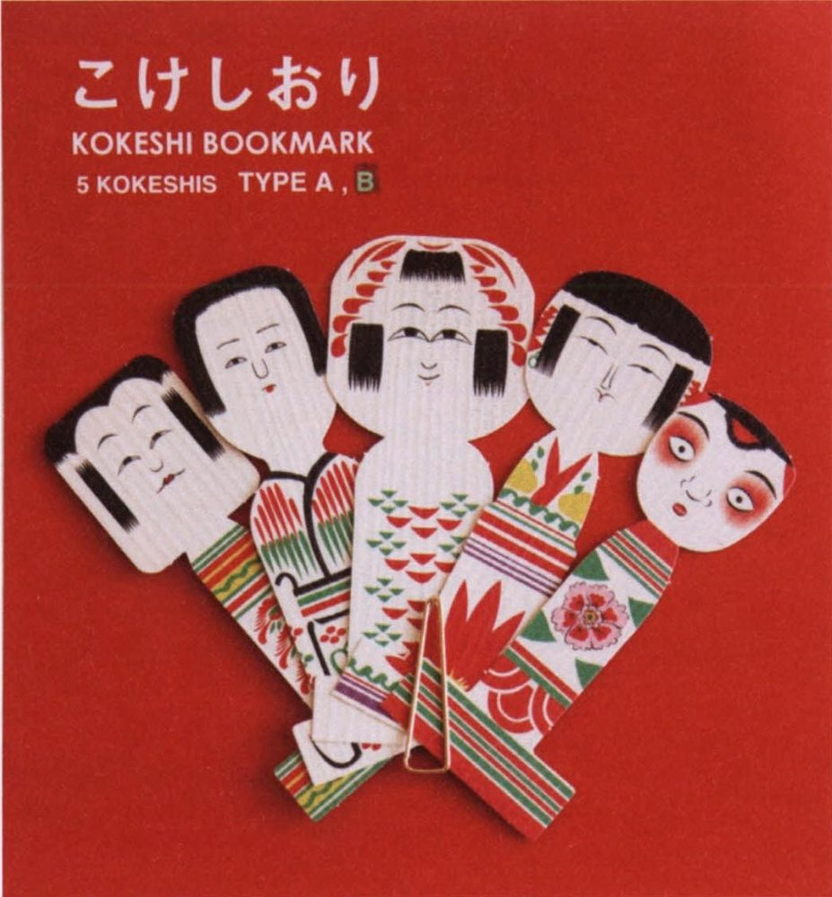
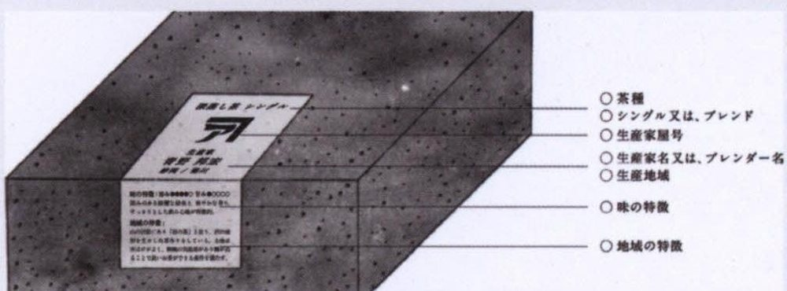
Study cues
- How does the introduction use "the sea" to explain why the Chinese goods Japan received early on were few but refined?
- What are the two old ideas Yusaku Kamekura set out to change?
淺談設計之美
Scope. This is a short essay whose abstract already lays out its structure: the beauty of design lies in meeting needs in a targeted way; it changes with the era, the people and the environment; its essence is creating according to the laws of beauty; its sources are nature and science. The essay develops this with examples such as clothing, houses and the Venus, and carries no separate author credit.
Main ideas
- Beauty has no single scale of high and low. The clothing of each people meets both everyday and aesthetic needs; the differences come from climate and custom, and do not automatically make one better than another.
- The essay explains why the international style of glass curtain walls spread so fast: resources are limited and populations are growing, so people want to house more people for less money. Cold simplicity was therefore widely accepted.
- Different people, different beauty. Making adult things to children's proportions looks ridiculous; children's liveliness can look childish in some adult settings.
- Environment changes taste. The essay uses the character mei ("beautiful"), made of yang ("sheep") over da ("big"), to show that early beauty was linked to food, and uses low northern houses and tall, steep-roofed southern houses to show that keeping warm and draining rain each produce their own beauty.
- Taste shifts. After seeing a lot of straight lines, people want curves; after a lot of curves, they want straight lines again. Early industry added natural forms back into products; later the Glasgow Four brought straight lines back.
Methods
- Before designing, fill in three boxes: era, people, environment. If all three are empty, do not start talking about beauty.
- When comparing the same type of building in two regions, first write the climate requirements, then the form. The form is the result of the requirements.
- When you grow tired of one kind of line (all straight, or all curved), note it as a shift in taste, not as a truth.
Study cues
- How does the essay explain why the international style of glass curtain walls spread so quickly?
- What environmental requirements do the low flat-roofed houses of the north and the tall steep-roofed houses of the south each meet?
為什麼設計
Authors: Kenya Hara, Masayo Ave
Scope. 《為什麼設計》 is a conversation between Kenya Hara and Masayo Ave. Chapter 1 begins with "How did you come to design?", and Hara's answer is not posters but text, typesetting and books. Later topics include language and communication, values, and design education.
Main ideas
- He was drawn to graphic design by metal type. At university he typed his text character by character on a Japanese typewriter, and when he collected the copy in the afternoon it had already been set into a beautiful page. At that moment he decided to do this kind of work.
- A book is a container for wisdom and imagination. Printing fixes ideas that have been carefully worked over. Even now, the moment a book lands with a pat in his hands is still the moment he feels the work is done.
- The medium can be a book, an exhibition, an advertisement or the web, but what matters most to him is that information becomes a form worth careful thought. Finishing the installation of an exhibition and lying in the venue at dawn to look it over is another, equal sense of completion.
- The conversation also touches on shifts in values, such as "wrinkling" being better than "smoothing out", and creating a sense of presence. Design is placed within how we understand the world, not only how we make an image.
- Education is another thread in the book: letting people know how much they do not know, and hoping design education can begin in primary school. These are topics in the second half of the conversation.
Methods
- Before doing graphic work, set a page with a passage of text. Feel the letter-spacing, then add images.
- For every project, write down what "the moment it is handed to society" is: the book landing, the lights coming on, or the page going live. Work back to the details from that moment.
- For a book in conversation form, take notes in two columns: Hara's experiences, and Ave's follow-up questions. The questions are often clearer than the answers.

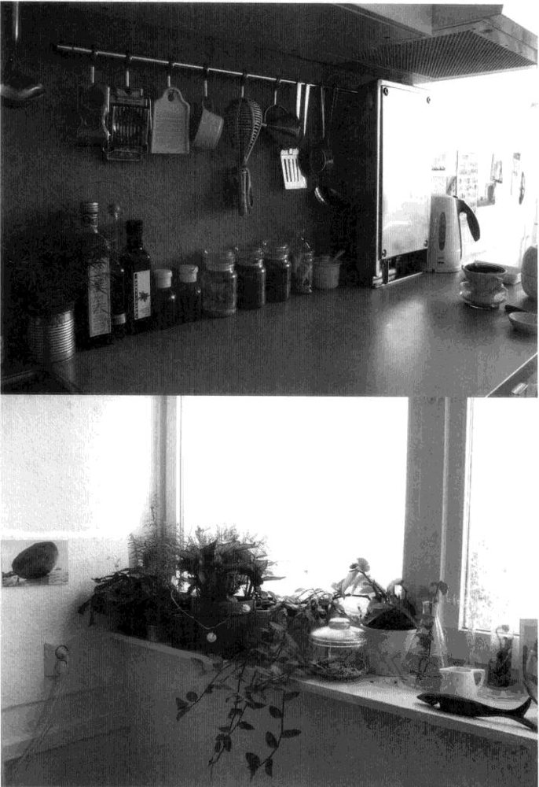
Study cues
- Which specific production process does Hara say moved him to take up design?
- In this conversation, what does "a book is a container" say the book holds?
重構美學
Author: Wolfgang Welsch
Scope. Welsch's Undoing Aesthetics sets out to free aesthetics from "studying only art", and to cover everyday life, the media, and the contradiction between the aesthetic and the anaesthetic. The preface to the Chinese translation sets out the book's threads clearly: the process of aestheticisation, "aesthetic" as a word of family resemblances, and visual and aural culture.
Main ideas
- Contemporary life has been aestheticised: reality is given aesthetic decoration, hedonism becomes the matrix of culture, and the aesthetic is also an economic strategy. Production changes with new materials, and reality is more and more constructed by the media.
- "Aesthetic" is not a word with a single essence. Borrowing Wittgenstein's idea of family resemblance, the book overlaps meanings such as the perceptual, the elevated, the hedonistic, the subjective and the harmonious.
- He sees twentieth-century modern architecture as a Cartesian mathematical unity, not a plural modernity. Plurality and heterogeneity are the modernity he wants.
- Visual culture is bound up with reason, light and evidence. Jeremy Bentham's panopticon is used to show that the more transparent something is, the more easily it can be watched by a single central eye. Here light is not freedom but a trap.
- He therefore hopes for a culture that knows better how to listen: receiving, not just staring. In the end he still stresses that seeing and hearing must work together, rather than simply replacing sight with hearing. Electronic media and virtual worlds are also part of this discussion.
Methods
- When you see a street or packaging that has been "beautified", write whether it is decoration, pleasure or a sales strategy. All three can be true at once, but write them separately.
- Use family resemblance to collect the "beautiful" you hear: comfortable, harmonious, good-looking, high-end. Do not merge them into one definition.
- Check a "transparent" interface: can the user see the system, or can the system see the user?
Study cues
- In the panopticon example, why does light turn into control?
- How does the aestheticisation Welsch describes differ from the aesthetic in an art museum? Explain using a shopping mall.
白
Author: Kenya Hara
Scope. The contents of 《白》 are: white, paper, emptiness. The sample in this volume concentrates on Hasegawa Tohaku's 《松林圖》 screens, the empty space of Shinto, and how "nothing at all" becomes a container that can hold things. It is about white and emptiness as ways of communicating.
Main ideas
- Tohaku's 《松林圖》 does not rely on detailed depiction. Omission and loose brushwork free the trees from the paper and let viewers fill in the rest themselves. The subject is less the trees than the mist between them.
- White is not absence. The whitest areas can be distant mountains, or something still there behind the mist. Blank space is seen as a layer of information.
- Emptiness is infinite potential: only a container with nothing in it can hold anything. The power of communication lies in this emptiness.
- The Shinto yashiro encloses an empty plot with four pillars; its principle is to embrace emptiness. Because it is empty, a god can enter. People cannot tie a god down and bring it; they can only leave the space open.
- Later chapter titles also include the tea ceremony and the origins of the Japanese room. Emptiness and white continue there; it is not a switch to a different theory.
Methods
- When leaving white space, write one sentence: is this white "nothing", or "something still behind"? The two kinds of white have different densities.
- When making a container (packaging, a room, a cover), first use it empty once, then decide what to add. Whatever goes in must be worthy of that emptiness.
- When looking at ink painting or minimalist posters, split mist, the white of the paper and unprinted white into three kinds; do not call them all background.
Study cues
- In 《松林圖》, what work are the areas Tohaku did not fill doing?
- Use the Shinto practice of "first leaving an empty plot" to describe the white space in a brand or a poster.
社會心理學（第八版）
Original title: Social Psychology, 8th edition
Author: David G. Myers
Scope. Myers's textbook defines social psychology as the study of how people think about, influence and relate to one another. The eighth edition has four parts: social thinking, social influence, social relations, and applications in clinical settings, the courts and a sustainable future. It is not a design handbook, but the chapters on attribution, conformity, persuasion and groups bear directly on user research and communication.
Main ideas
- Several basic ideas are set out in the introduction: we construct our social reality; our social intuitions are powerful but sometimes perilous; social influences shape our behaviour; attitudes and dispositions also shape behaviour; social behaviour is also biological behaviour.
- Social thinking covers the self, beliefs and judgements, and behaviour and attitudes. The chapter on attribution asks whether the cause lies in the person or in the situation. The fundamental attribution error is putting it down to the person too quickly.
- Self-knowledge takes a detour: people learn their attitudes by observing their own behaviour, especially when the behaviour cannot simply be put down to outside pressure.
- The chapters on social influence cover genes, culture and gender, conformity, persuasion and groups. The chapters on relations cover prejudice, aggression, attraction, altruism and conflict.
- The methods chapter insists that hypotheses must be tested; correlation is not causation; experiments are used to find causes; and laboratory results must still be checked for whether they hold in everyday life. The book also warns that much of what "I knew all along" only looks like common sense in hindsight.
Methods
- When users make mistakes, first write the situation (interface, timing, pressure), then the personality. Avoid the fundamental attribution error.
- When running a small survey, write separately whether this is a correlation or whether you already have a control. Without a control, do not write "because".
- When using persuasion and conformity on a poster, write whether you are relying on authority, the group, or the viewer's own attitudes. Do not lump these three sources together as "it works well".
- When you read a conclusion that sounds like common sense, first find the research design in the book, then decide which part to believe.
Study cues
- What is the fundamental attribution error? Rewrite a comment such as "the users are stupid" as a description of the situation.
- Why does a correlational study not yet let you write "A causes B"?
藝術與錯覺：圖畫再現的心理學研究
Original title: Art and Illusion: A Study in the Psychology of Pictorial Representation
Author: E. H. Gombrich
Scope. 《藝術與錯覺》 grew out of the 1956 lectures "The Visible World and the Language of Art" and was later expanded into a book. The introduction is titled "Psychology and the Riddle of Style". The contents pass through truth and the stereotype, formula and experience, the image in the clouds, and conditions of illusion, up to the ambiguities of the third dimension. What to read in this book is how representation begins, not a dictionary of symbols.
Main ideas
- The riddle of style is placed within psychology: people do not first have a neutral field of vision and then decide how to paint it. Anticipation changes perception. One page of the book uses an example to show that once an expectation is set up, what you see changes with it.
- "Formula and experience" is one of the backbones of the book. Painters start from an existing formula, then revise it through observation. Truth and the stereotype are therefore not opposite poles but two stages of one process.
- "The image in the clouds" is about projection: people see things in indefinite shapes. Illusion has conditions; it does not happen at any time.
- The third dimension can be read in several ways. Posters use reversals of figure relationships to give the flat surface an extra dimension in which shapes can be arranged, without being tied to one particular space.
- The book keeps the order of the lectures, and the pictures follow the argument. It is an illustrated argument, not a picture book with captions.
Methods
- Before copying, write down the formula you plan to use (the usual way of drawing a face, the usual perspective for a building). Then change only the part that observation overturns.
- When looking at an ambiguous figure, write down two readings, and which lines make you jump from one to the other.
- When making positive and negative shapes in a poster, check that both readings work, and that neither locks the viewer into the wrong space.
- Read this book in chapter order; do not skip to the illustrations as style reference.
Study cues
- What do "formula" and "experience" each mean in painting? Which comes first?
- Why are clouds or stains easily seen as images? How is this different from a picture that has already been drawn clearly?
視覺思維
Original title: Visual Thinking
Author: Rudolf Arnheim
Scope. 《視覺思維》, translated by Teng Shouyao, argues that perception itself is cognition. The contents run from "Early stirrings" to the intelligence of visual perception, images in thought, the proper place of language, and art and education. It follows on from shape and balance, and asks whether seeing is already thinking.
Main ideas
- If the brain received only raw sensory material, that material could not guide us. We must see the general in particular things. Taking in information and processing it can be separated in principle, but in practice they are entangled.
- Vision is selective. We fix our gaze in order to solve a problem, including judging depth, comparing, and completing parts that are hidden.
- Thinking needs images. The questions include whether one can think without images, how particular images carry the general, and how abstract images can become.
- Language cannot replace this process. The book asks whether one can think in words alone, and holds that the role of words is to point to objects of perception. Linear sentences are useful but overrated.
- Art education is therefore not an extracurricular decoration. A drawing is a statement; seeing and understanding are the same thing. Explanatory diagrams should concentrate on function.
Methods
- When solving a problem, draw first, then write. Where you cannot draw, you have not yet thought clearly.
- Every verbal explanation must have an image beside it. If a sentence cannot point back to a place in the picture, the sentence is empty.
- In teaching examples, keep only the parts related to function. Decorative detail steals attention from the structure that needs to be understood.
- When comparing two shapes, write down the one question you are looking at (which is taller, which is further away); your gaze serves that question.
Study cues
- Why does Arnheim say that pure sensory material cannot yet guide us?
- Choose a concept you failed to explain in words alone, and turn it into a picture. What does the picture add that the sentence did not?
視覺思維（阿恩海姆）
Original title: Visual Thinking
Author: Rudolf Arnheim
Scope. This is another Chinese translation of 《視覺思維》; the title page names Arnheim as the author. The translator's preface spends a long time on Gestalt before turning to the original book: the whole is not the sum of its parts, transposability, blank space and incompleteness, figure and ground. The contents of the main text run from the split between perception and thinking and Plato's two kinds of intellect to the selectivity of vision.
Main ideas
- A Gestalt (a perceived whole) is not the outline of a thing itself, nor an arrangement of parts, but a whole organised by perception. A triangle is not three lines added together.
- The whole rewrites the parts. The same square looks different when placed in different wholes.
- Transposability: the size, direction, colour and material of the components can all change and the Gestalt can remain. A square drawn in lines or built in bricks is still the same shape; a tune played on another instrument is still the same tune.
- Blank space and incompleteness, repetition and rhythm, figure and ground are presented in the preface as tools you need before reading the book. Figure and ground also relate to depth.
- The original book's own starting point is that the Western tradition separated perception from thinking and distrusted the senses. Arnheim wants to restore perception as cognition.
Methods
- When describing a shape, write the whole first, then the parts. If the list of parts added together still does not look like what you see, the whole has not yet been described.
- Use transposition as a test: change to another colour or material, and see whether the structure is still there.
- Mark figure and ground once for every assignment. Where the ground is read as a gap, draw the ground as a shape too, and see whether the relationship changes.
- Before reading the main text, make a one-page glossary from the six headings in the preface, so you do not mistake "Gestalt" for "a nice-looking outline".
Study cues
- Use transposability to explain why a square is still a square after its colour changes.
- If you place the same square in two different wholes, how do you expect it to look different?
視覺藝術的含義
Original title: Meaning in the Visual Arts: Papers in and on Art History
Author: Erwin Panofsky
Scope. Panofsky's 《視覺藝術的含義》 collects essays on art history; the Chinese translation appears in a series of translations on aesthetics. The translator's preface spends a good deal of space on the difference between iconography and iconology. The book's contribution is a set of steps for interpreting the meaning of images, and the use of those steps to read specific works.
Main ideas
- Iconographical analysis must first master the subject matter found in literature and oral tradition. Someone who does not know the Gospels might see The Last Supper as nothing more than a lively dinner party.
- Iconology is iconography that interprets. It does not compile statistics on motifs; it interprets intrinsic meaning through synthesis.
- Describing, identifying the story and interpreting meaning for its time are therefore three different levels of work. The first relies on practical experience; the later levels rely on original texts and an overall judgement of the culture.
- Panofsky stresses that the humanist must re-create the work in spirit. Scientific analysis (pigments, X-rays) is useful, but cannot take the place of this re-creation.
- Case studies in the book include how Dürer came into contact with the classical style and translated Italian idioms into another visual language. Interpretation must go back to the traditions the artist actually encountered.
Methods
- When analysing a traditional image, write three levels: what you see, which story this is, and what else it might have meant in its time. Each level needs evidence.
- At the first level, do not use the proper names from the story. First describe the actions and objects as a stranger would.
- When checking the original text, note which details of the story are painted and which are left out. What is left out is also a choice.
- Write technical examination and interpretation of meaning as two separate paragraphs. Material analysis cannot be equated directly with symbolism.
Study cues
- At which level would someone who does not know the Gospels stop when looking at The Last Supper?
- Choose a Chinese New Year print (nianhua) or an advertisement, and write one sentence at each of the three levels. If the third level has no evidence, mark it as a hypothesis.
設計中的設計
Author: Kenya Hara
Scope. This is another scan of 《設計中的設計》. The opening section, "Where the lament comes from", defines design as coming to understand the world we live in through making and communicating. The visible later part does not retell design history. Instead it shows the huge white zip from the Matsuya renovation.
Main ideas
- Technology and the economy move fast, and aesthetic awareness cannot keep up. Hara suggests we first stop and listen to the lament of our time, rather than only standing at its front edge.
- Creativity can also lie in the history behind us. Moving calmly between the future and the past matters more than chasing the new in one direction.
- Good understanding and discovery give people joy. Hara sees putting the act of design into words as a designer's responsibility to society.
- The outer wall of Matsuya was made into a huge white zip: as the building work progressed, the zip opened further. The renovation process itself became visible information on the Ginza.
- The zip is also a metaphor for fashion. It was used again on the hoardings and inside the store to refresh the feeling of "coming here again".
Methods
- Before you start, write two sentences of lament: what feeling the people in this place are missing. Your proposal has to answer those two sentences.
- If a building process or redesign is worth seeing, design it as a sign (like the zip opening), rather than only unveiling the finished result.
- When the same element appears once on the façade and once inside, write down which memory its second appearance strengthens.
Study cues
- What does "Where the lament comes from" urge designers to do first, instead of chasing what first?
- Does the Matsuya zip communicate the finished look, or the fact that the renovation is happening? Say it clearly in one sentence.
設計中的設計（全本）
Author: Kenya Hara
Scope. This volume is the complete edition of Designing Design. Besides re-design, its contents list also includes the architects' macaroni exhibition, Muji, and HAPTIC (Awakening the Senses). A long essay at the front describes Hara as someone who works with white, with touch and with everyday things. This section reads the book through the items that only the complete edition adds.
Main ideas
- The re-design list is longer in the complete edition: toilet paper, a cockroach trap, matches, nappies, tea bags. Works such as Naoto Fukasawa's tea bag make ordinary things unknown again.
- HAPTIC was part of the 2004 Takeo paper show, subtitled "Awakening the Senses". Its experiment was about ways of sensing, not about making one more form.
- In this description, white is the backbone of the work: snow, space, floating, trust. Only when colour steps aside can touch speak. A red dot, a red seal or red lettering is the impact left on top of the white.
- Muji is described as a large range of everyday goods and stores. The key points are a mature understanding of daily life, and an image made softer and closer to nature.
- The hand is imagined as the first drinking vessel: two cupped hands scooping water are a container. Small, natural cases are given more weight than any prediction about the future.
Methods
- You can list the complete edition's re-designs in a table: the object, the sense that was changed, and the action people rediscover. Fill in only one action per row.
- When working with paper or packaging, first touch it with your eyes closed, then open them and look. If the touch feels empty, the visual proposal is not finished yet.
- Leave just one red dot or red word on a white ground, and check whether it is navigation or only decoration.
- If a brand has hundreds of products, write down which feeling they share, not which graphic.
Study cues
- What kind of design question does HAPTIC try to awaken? It differs from "making one more good-looking form" in where it starts.
- What do re-designs like Naoto Fukasawa's tea bag want people to rediscover?
設計中的設計（原研哉）
Author: Kenya Hara
Scope. This is yet another scanned copy of 《設計中的設計》. Its contents also move from "What is design?" to RE-DESIGN. The later part, which is clearer in this volume, covers what paper and books can still do beside electronic media, and the very few rooms in a forest project.
Main ideas
- The idea of design is again traced back to Ruskin, Morris and the 1851 Great Exhibition: machines quickly imitated handwork, but quality became crude. Modern design was born from this backlash.
- The Arts and Crafts movement opposed lifeless machine-made goods with real book design and wallpaper. The later question was how to find ease of use and the joy of living again within mass production.
- The re-design examples in the contents are still toilet paper, immigration stamps and a cockroach trap. Everyday things are taken up to be rethought.
- Electronic media are still developing, so at this stage books and electronic media push each other forward. The questions about paper have not ended because of this; the author says he puts this into practice in his book design.
- A 32-hectare site is planned with only about five rooms. The book describes this as running a forest, not running a hotel.
Methods
- When comparing paper and screen, write one action that only each can do (holding, folding, turning pages; or searching, updating). Do not just write which one is newer.
- For a re-design, keep this volume's constraint: the object must be an everyday thing that already exists.
- For a spatial project, first write down the number of people and rooms. Fewness itself can be the concept, if it lets the forest stay.
Study cues
- How does this volume describe the relationship between books and electronic media? Replacement, or pushing each other forward?
- What do the "five rooms" protect in the forest project?
設計師要懂心理學
Original title: 100 Things Every Designer Needs to Know About People
Author: Susan Weinschenk
Scope. This is Weinschenk's complete volume. Its contents start with "How people see" and "How people read", then move on to memory, thinking, attention, motivation, social behaviour, emotion, mistakes and decisions. The mini edition's sample leans towards the later chapters; this volume's opening makes vision clear: what the eye sees still has to pass through the brain.
Main ideas
- A large share of the brain's resources goes to vision, but what comes in through the eyes still has to be converted. The book shows this with a picture: people see a white triangle, yet there is no such triangle in the image. Seeing is the brain's interpretation.
- Reading, memory and thinking each have their own chapter. Statements in the contents include: people are better at processing small chunks of information; people create mental models and interact with conceptual models; stories are a good way to process information; a demonstration is often the best way to teach.
- Attention, motivation and people as social animals each get a chapter. The limit on the number of strong ties, imitation, and online interaction following offline rules are all in the contents.
- The chapter on mistakes states: no product is completely error-proof; people make mistakes under stress; some mistakes can be predicted; and people have different ways of correcting errors. A signal that is too strong or too weak changes whether false alarms or misses cost more.
- The chapter on decisions argues that most decisions are made unconsciously, and that the unconscious senses things before the conscious mind. Choice is experienced as control; group decisions can also be wrong.
Methods
- When you finish drawing an icon, ask someone whether they see the lines you drew or a shape their brain filled in. The filled-in shape should be the one you want.
- Cut information into small chunks and pair it with a story or a demonstration. Long explanations are a last resort.
- Tune error messages by their cost: if a miss is more serious, strengthen the signal; if a false alarm is more serious, weaken it.
- Draw one diagram of the mental model and one of the system's conceptual model. Wherever the two disagree is where to change the interface.
Study cues
- The book's picture where "there is actually no triangle": where does it suggest seeing happens?
- An alarm is loud and annoying. Based on the cost of false alarms and misses, would you first make it stronger or weaker?
設計心理學（247 頁本）
Original title: The Design of Everyday Things
Author: Donald A. Norman
Scope. This is a 247-page scan of 《設計心理學》. The pages carry prepress marks, and the content is still everyday objects, affordances and conceptual models. Nearly all of this volume's sample stays on the thermostat: both a room and a car simply switch on or off, yet they cannot be operated the same way.
Main ideas
- Home stoves, air conditioners and most ovens run at either full power or not at all. The temperature rushes quickly towards the setting, so setting it higher only wastes energy. To use them, you need to understand this conceptual model.
- A car's heating and cooling are mixed. To reach the target faster, first turn off the mixing and go to maximum or minimum, then return to mixing once you get there to hold it.
- If the conceptual model is right, everyday operation is less likely to go wrong. It does not matter if the model is oversimplified, as long as it is enough to guide action.
- A product is communication between designer and user. Natural mapping lets people see the relationship between controls and functions; without it, users invent a model of their own.
- If you have to look for instructions on the machine, or stick on "Push here" or "Switch off power first", the constraints and affordances have not been designed well. A tap that you press down should look like it is meant to be pressed down.
Methods
- First write down which real states the machine has (on, off, mixed). If a continuous dial on the interface is lying, change it.
- When two products have the same states but different models, do not make their controls look like twins.
- Cover all the text with your hand and see whether you can still tell where to press. If not, change the shape.
- Draw "natural mapping" as lines: connect the finger's action to the position of the result. If the lines cross, rearrange.
Study cues
- Use the conceptual model to explain: why should you first turn a car's air conditioning to an extreme?
- Cover every word on an appliance. Do you still know where to press first?
設計心理學（中文版）
Original title: The Design of Everyday Things
Author: Donald A. Norman
Scope. This is another scan of the Chinese edition of 《設計心理學》, whose contents also include affordances, conceptual models and mapping. This volume's illustrated pages fall on how a switch box is mounted, and how a complex machine defeats people. The thermostat passage in the sample is the same as in the earlier volumes, so this section reads the design advice on these two pages instead.
Main ideas
- If switches are buried in the wall, their direction does not easily match the room. The book's idea is a standard box mounted on the wall surface, with the switches on the horizontal top of the box, so their orientation can be seen.
- Natural mapping is still the principle: the arrangement and direction of the controls should match the things they control. If people cannot see the relationship, all they can do is try.
- A complex machine can be broken into parts that are not complex. Put together, they still leave people lost. The person in the book writes down each function needed, then writes how to do each one.
- Conceptual models, feedback, constraints and affordances are the tools in these contents, used to avoid "needing an engineering degree to dare use it".
- Technology speeds up while people stay slow. As functions multiply, if the parts are not reorganised into a list that people can carry out, the dashboard turns into a cockpit.
Methods
- When arranging switches, make each switch face the same way as the light or burner it controls. Do not rely only on remembering numbers.
- For a complex product, first list its functions, with only one action next to each. A list is closer to real use than showing all the buttons at once.
- The mounting method is also design. Burying it in the wall or exposing it on the surface changes whether people can see the mapping.
- Ask someone who has never used it to operate it by its form alone. The button where they stop is where the list should be broken down.
Study cues
- Why does putting the switch box on the wall surface improve the mapping?
- Break one settings page on your phone into five functions. Which one has no description of its own action at the moment?
設計美學（廣州美術學院藝術設計教程）
Scope. This is the design aesthetics textbook of the Guangzhou Academy of Fine Arts. It opens with a course description: aims, weekly schedule, assignments and exams. The main text moves from "What is aesthetics?" into aesthetic questions in design. A large part of the sample introduces the contents of other design aesthetics textbooks; those are reference books, not this course's own chapters.
Main ideas
- The course describes the birth of aesthetics as the meeting of rationalism and empiricism. The subject of aesthetics is aesthetic phenomena in perception, moving from beauty and art to aesthetic categories and formal beauty.
- The significance of aesthetics is described as moving from the perfection of perception to the perfection of the person. Aesthetic questions in design are therefore not an extra-curricular appreciation, but the core topic of the course.
- "Beauty lies in the concrete object of consciousness" puts beauty back into this particular thing, rather than into an empty definition.
- An illustration in the textbook points out a common failure: hiding key parts such as a lamp's switch to make it look good damages its operation. If good looks remove visible operation, this conflicts with the design aesthetics the course teaches.
- Another example calls the gate of the Forbidden City a "sign of distance": as soon as you step through, you are set apart from everyday life. Form can change people's psychological distance from reality.
Methods
- Write your assignment in the course's order: first establish that the aesthetic phenomenon is perceptual, then discuss the form of this particular design.
- Before hiding any key control, ask someone to find it within ten seconds. If they cannot, do not hide it for the sake of a clean surface.
- For the entrance to a building or exhibition, ask what kind of distance it creates. Write that distance down as the design intention.
- When citing other aesthetics textbooks, label them separately. Do not treat someone else's chapter structure as this course's syllabus.
Study cues
- Where does this course locate the subject of aesthetics? How is its starting point different from "memorising a definition of beauty"?
- Where is the beauty of the lamp with the hidden switch, and where is its failure? Write them separately in two sentences.
設計與視知覺
Author: Gu Daqing
Scope. Gu Daqing's book is about training visual thinking in design education, especially for architecture, interiors and the environment. It is not a translation of Arnheim's 《視覺思維》. The preface explains that the book uses teaching to probe a theoretical question: how to combine the act of drawing, the perception of form and systems of drawing into one kind of training.
Main ideas
- A typical syllabus splits visual training across three courses: fine art, technical drawing and design. The author argues that visual thinking includes the physical act of drawing, the perception of form, and the projection of form on paper and in the mind all at once, so splitting them loses the whole.
- The book proposes an integrated kind of exercise, tested at places such as the Chinese University of Hong Kong: students meet the ideas of modern art while learning basic drawing, rather than learning skills first and applying them later.
- The questions in the introduction include accurate visual mechanisms, "picturesque" composition, sensitivity to images and to the texture of materials, and abstract thinking and spatial perception.
- The core of the book is a series of exercises. The six groups visible in the contents are light and dark, shape (positive and negative), volume, space, light and shadow, and texture. The texture group moves from the feel of materials to pattern.
- The book is written for both teachers and learners. It is neither a manual that can only be followed step by step, nor a thesis made only of citations.
Methods
- Take only one topic per exercise: light and dark, shape, volume, space, light and shadow, or texture. Finish it before switching; do not assess all six together.
- For the shape exercise, make drawing the negative shapes compulsory. If the negative shapes have not been seen as shapes, the exercise is not finished.
- For the space exercise, write about geometric structure and volume, rather than only drawing the outline of an elevation.
- When teaching, put the drawing action and the design concept on the same sheet. Handing in two separate assignments goes back to the division the author wants to break.
Study cues
- Why does Gu Daqing think that teaching fine art, technical drawing and design as separate courses still fails to capture visual thinking?
- Choose a corner of an interior and do only the "texture" exercise: turn the feel of its materials into a pattern, without drawing its function.
象徵的圖像：貢布里希圖像學文集
Original title: Symbolic Images: Studies in the Art of the Renaissance
Author: E. H. Gombrich
Scope. This is another Chinese translation of 《象徵的圖像》. The editor's preface stresses that the backbone of the book is a series of practical studies, on Botticelli, Mantegna, Raphael, Michelangelo, Poussin and Bosch. The long essay that shares the book's title compares images with language, and discusses how the Neoplatonic and Aristotelian traditions understood symbols.
Main ideas
- The Botticelli essay is written as a hypothesis, waiting for others to disprove it. Gombrich reminds us that historical interpretation belongs to opinion about the world of the senses, not to complete knowledge like mathematics, so an interpretation must be open to refutation.
- The practical essays go back to the original texts to explain the myths, astrology and allegory in Renaissance paintings. One of them, "Ideal and Type", links back to schema and correction: images of the Madonna follow a set of schemata that can be catalogued.
- Understanding the subject changes how you see the form. If you do not know the public and the secret meanings in Poussin's 《俄里翁》, it may look like no more than a sophisticated illustration; once you know them, the originality of its form shows.
- Raphael's Stanza della Segnatura is used to show how a lofty subject and a harmonious group of figures merge into one thing. Here meaning and beauty cannot be separated.
- The editor gathers Gombrich's art history into three areas: representation, decoration and symbolism. This collection stands on the side of symbolism, alongside 《藝術與錯覺》 and 《秩序感》.
Methods
- When writing an iconographic essay, label your conclusion as a hypothesis, and state what evidence could overturn it.
- First assemble a set of schemata on the same subject (for example, one type of Madonna), then discuss how this particular picture corrects the schema.
- After explaining the meaning, go back to the form: how did your view of the composition change between before and after you knew the subject?
- Keep symbolism, representation and decoration in separate notes. A painting can have all three, but do not merge them into one paragraph.
Study cues
- Why does the editor say that only after understanding the subject of 《俄里翁》 can you better see the originality of its form?
- For Gombrich, which book covers each of representation, decoration and symbolism? Which side does this volume stand on?